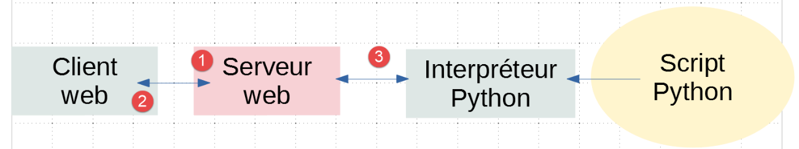
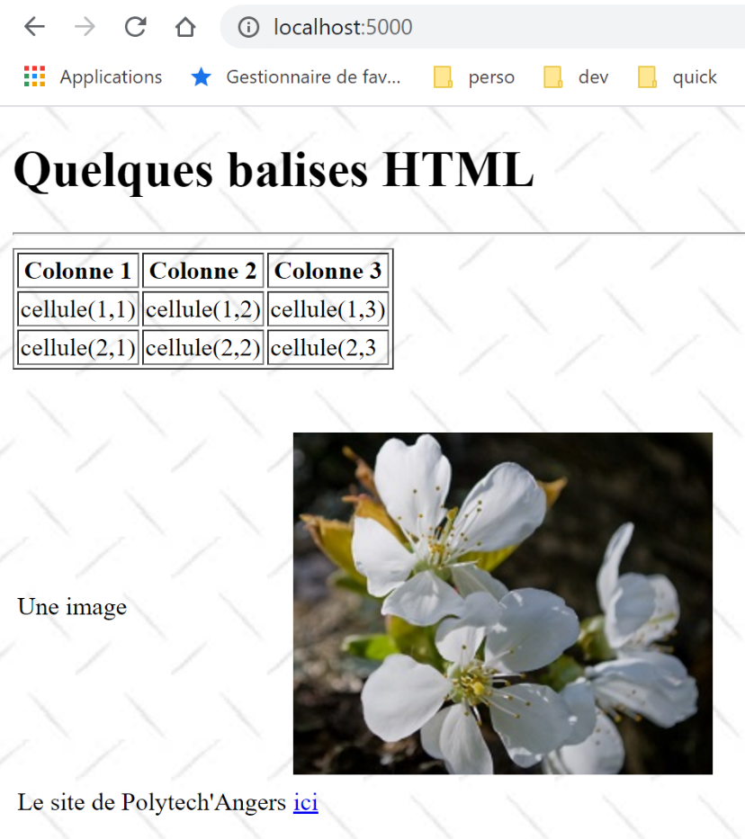
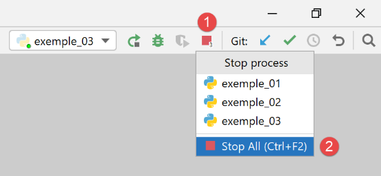
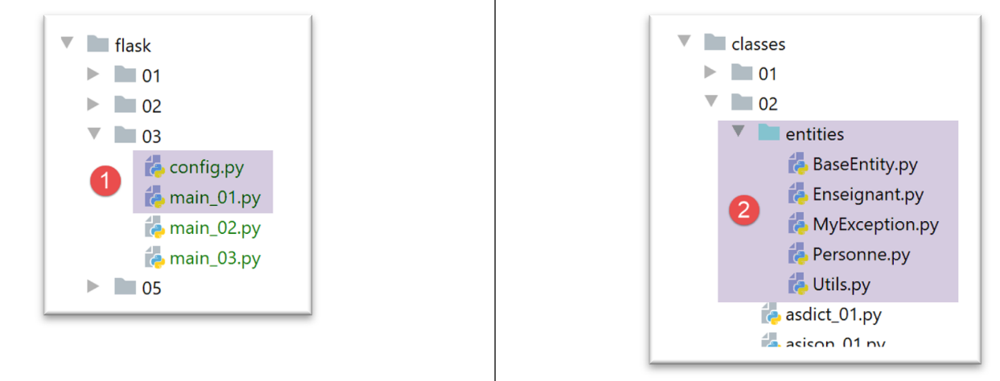
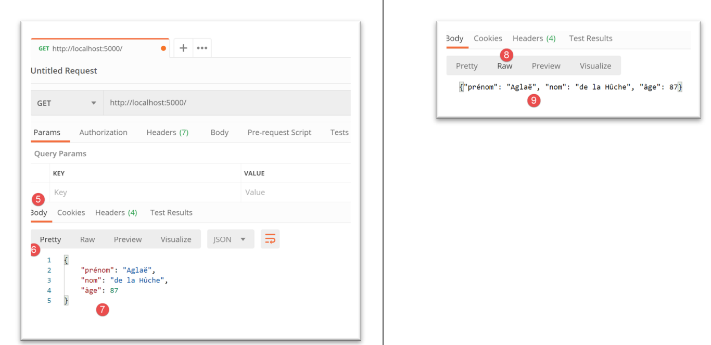
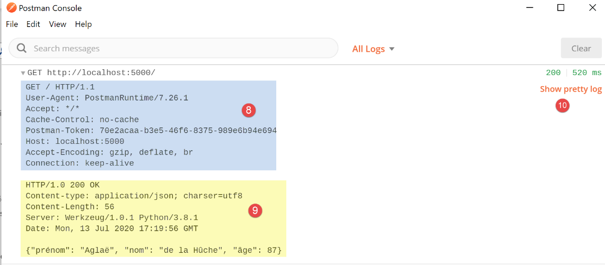
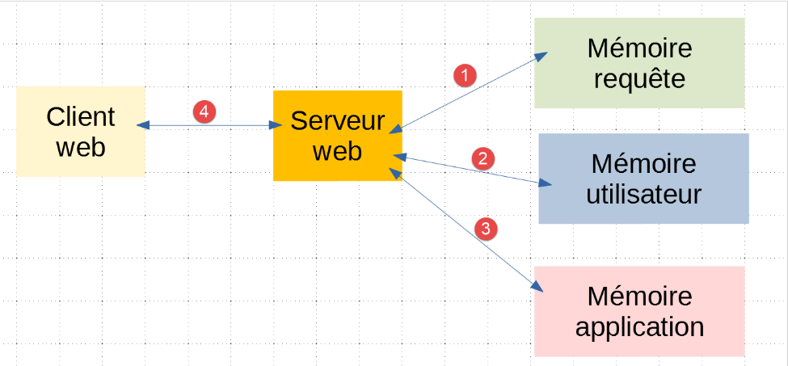
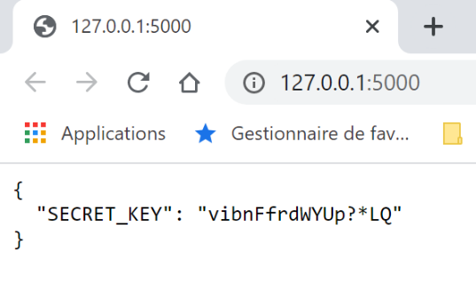
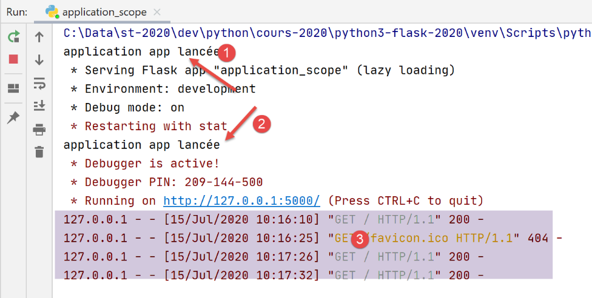
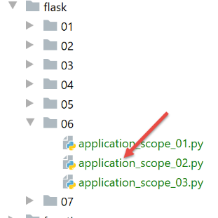

22. Servicios web con el marco Flask
Por «servicio web» nos referimos aquí a cualquier aplicación web que proporcione datos sin procesar que son utilizados por un cliente, a menudo un script de consola en los ejemplos que siguen. No nos interesa ninguna tecnología en particular, como REST (REpresentational State Transfer) o SOAP (Simple Object Access Protocol), por ejemplo, que entregan datos más o menos sin procesar en un formato bien definido. REST genera jSON, mientras que SOAP genera XML. Cada una de estas tecnologías describe con precisión la forma en que el cliente debe consultar al servidor y el formato que debe tener la respuesta de este. En este curso, seremos mucho más flexibles en cuanto a la naturaleza de la solicitud del cliente y la respuesta del servidor. Sin embargo, los scripts escritos y las herramientas utilizadas son similares a los de la tecnología REST.
22.1. Introducción
Los scripts de Python pueden ejecutarse en un servidor web. Dicho script se convierte en un programa de servidor capaz de atender a varios clientes. Desde la perspectiva del cliente, llamar a un servicio web equivale a solicitar el URL de ese servicio. El cliente puede estar escrito en cualquier lenguaje, en particular en Python. En este último caso, se utilizan las funciones de Internet que acabamos de ver. Además, debemos saber «comunicarnos» con un servicio web, es decir, comprender el protocolo HTTP de comunicación entre un servidor web y sus clientes. Ese era el objetivo del párrafo |el protocolo HTTP|. Los clientes web descritos en esta parte del curso nos han permitido descubrir una parte del protocolo HTTP.

En su forma más simple, las interacciones entre el cliente y el servidor son las siguientes:
- el cliente abre una conexión con el puerto 80 del servidor web;
- realiza una solicitud de un documento;
- el servidor web envía el documento solicitado y cierra la conexión;
- a su vez, el cliente cierra la conexión;
El documento puede ser de diversa naturaleza: un texto en formato HTML, una imagen, un video, etc. Puede tratarse de un documento existente (documento estático) o bien de un documento generado sobre la marcha por un script (documento dinámico). En este último caso, se habla de programación web. El script para la generación dinámica de documentos puede estar escrito en diversos lenguajes: PHP, Python, Perl, Java, Ruby, C#, VB.net, etc.
A continuación, utilizaremos scripts de Python para generar dinámicamente documentos de texto.

- En [1], el cliente establece una conexión con el servidor, solicita un script de Python y envía o no parámetros a dicho script;
- en [3], el servidor web hace que el intérprete de Python ejecute el script de Python. El script genera un documento que se envía al cliente [2];
- el servidor cierra la conexión. El cliente hace lo mismo;
El servidor web puede atender a varios clientes al mismo tiempo.
A continuación, utilizaremos dos servidores web:
- el servidor ligero Werkzeug [https://werkzeug.palletsprojects.com/en/1.0.x/]. Este servidor es utilizado por el marco web Flask [https://flask.palletsprojects.com/en/1.1.x/]. Lo llamaremos con mayor frecuencia servidor Flask;
- el servidor Apache 2 [https://httpd.apache.org/];
El servidor Flask se utilizará en todos los ejemplos. El servidor Apache se utilizará para alojar la aplicación web que vamos a desarrollar.
El marco de trabajo Flask está desarrollado en Python. Es un módulo que se instala en un terminal PyCharm:
(venv) C:\Data\st-2020\dev\python\cours-2020\python3-flask-2020\inet\utilitaires>pip install flask
Collecting flask
Downloading Flask-1.1.2-py2.py3-none-any.whl (94 kB)
|| 94 kB 1.1 MB/s
Collecting click>=5.1
Downloading click-7.1.2-py2.py3-none-any.whl (82 kB)
|| 82 kB 5.8 MB/s
Collecting itsdangerous>=0.24
Downloading itsdangerous-1.1.0-py2.py3-none-any.whl (16 kB)
Collecting Jinja2>=2.10.1
Downloading Jinja2-2.11.2-py2.py3-none-any.whl (125 kB)
|| 125 kB 6.4 MB/s
Collecting Werkzeug>=0.15
Downloading Werkzeug-1.0.1-py2.py3-none-any.whl (298 kB)
|| 298 kB 6.4 MB/s
Collecting MarkupSafe>=0.23
Downloading MarkupSafe-1.1.1-cp38-cp38-win_amd64.whl (16 kB)
Installing collected packages: click, itsdangerous, MarkupSafe, Jinja2, Werkzeug, flask
Successfully installed Jinja2-2.11.2 MarkupSafe-1.1.1 Werkzeug-1.0.1 click-7.1.2 flask-1.1.2 itsdangerous-1.1.0
- línea 1: el comando ejecutado;
- línea 19: los elementos que se han instalado:
- [flask-1.1.2]: es un marco de trabajo para el desarrollo web en Python;
- [Werkzeug-1.0.1]: es el servidor web que responderá a las solicitudes de los clientes;
- [Jinja2-2.11.2]: es una herramienta que permite insertar elementos dinámicos en páginas que, de otra manera, serían estáticas;
22.2. scripts [flask/01]: primeros elementos de programación web

Nuestros ejemplos se ejecutarán en la siguiente arquitectura:

- en [1], se ejecutará un script de Python tal como se ejecuta un script de consola convencional;
- en [2], de manera transparente, se instancia un servidor web que espera solicitudes. De hecho, solo aceptará una única URL;
- en [3], el navegador solicitará al servidor su único URL;
- en [4], el servidor ejecutará el script de Python designado por la consola [1];
- en [5], el script devolverá sus resultados al servidor web, un documento de texto;
- en [6], el servidor web enviará este documento de texto al navegador;
22.2.1. script [exemple_01]: conceptos básicos del lenguaje HTML
Un navegador web puede mostrar diversos documentos, siendo el más común el documento HTML (HyperText Markup Language). Este es un texto formateado con etiquetas de la forma <balise>texte</balise>. Así, el texto <b>important</b> mostrará el texto importante en negrita. Existen etiquetas que funcionan por sí solas, como la etiqueta <hr/>, que muestra una línea horizontal. No repasaremos las etiquetas que se pueden encontrar en un texto HTML. Existen numerosos programas WYSIWYG que permiten crear una página WEB sin escribir una sola línea de código HTML. Estas herramientas generan automáticamente el código HTML a partir de un diseño creado con el ratón y controles predefinidos. De esta manera, se puede insertar (con el ratón) una tabla en la página y luego consultar el código HTML generado por el software para descubrir las etiquetas que se deben utilizar para definir una tabla en una página WEB. No es más complicado que eso. Por otra parte, el conocimiento del lenguaje HTML es indispensable, ya que las aplicaciones web dinámicas deben generar por sí mismas el código HTML que se enviará a los clientes web. Este código se genera mediante un programa y, por supuesto, es necesario saber qué se debe generar para que el cliente obtenga la página web que desea.
En resumen, no es necesario conocer todo el lenguaje HTML para comenzar a programar para la web. Sin embargo, este conocimiento es necesario y se puede adquirir mediante el uso de programas WYSIWYG para la creación de páginas WEB, como DreamWeaver y decenas de otros. Otra forma de descubrir las sutilezas del lenguaje HTML es navegar por la web y ver el código fuente de las páginas que presentan características interesantes y aún desconocidas para ti.
Veamos el siguiente ejemplo, que presenta algunos elementos que se pueden encontrar en un documento web, tales como:
- una tabla;
- una imagen;
- un enlace;

Un documento HTML está delimitado por las etiquetas <html>…</html>. Consta de dos partes:
- <head>…</head>: esta es la parte no visible del documento. Proporciona información al navegador que mostrará el documento. A menudo contiene la etiqueta <title>…</title>, que establece el texto que aparecerá en la barra de título del navegador. También puede incluir otras etiquetas, en particular aquellas que definen las palabras clave del documento, las cuales son utilizadas posteriormente por los motores de búsqueda. En esta sección también pueden encontrarse scripts, escritos generalmente en JavaScript o VBScript, que serán ejecutados por el navegador;
- <body atributos>…</body>: esta es la parte que mostrará el navegador. Las etiquetas HTML contenidas en esta sección le indican al navegador el aspecto visual «deseado» para el documento. Cada navegador interpretará estas etiquetas a su manera. Por lo tanto, dos navegadores pueden mostrar de manera diferente un mismo documento web. Esto suele ser uno de los retos para los diseñadores web;
El código HTML de nuestro documento de ejemplo es el siguiente:
<!DOCTYPE html>
<html xmlns="http://www.w3.org/1999/xhtml">
<head>
<meta http-equiv="Content-Type" content="text/html; charset=utf-8" />
<title>Quelques balises HTML</title>
</head>
<body style="background-image: url(/static/images/standard.jpg)">
<h1 style="text-align: left">Quelques balises HTML</h1>
<hr />
<table border="1">
<thead>
<tr>
<th>Colonne 1</th>
<th>Colonne 2</th>
<th>Colonne 3</th>
</tr>
</thead>
<tbody>
<tr>
<td>cellule(1,1)</td>
<td style="text-align: center;">cellule(1,2)</td>
<td>cellule(1,3)</td>
</tr>
<tr>
<td>cellule(2,1)</td>
<td>cellule(2,2)</td>
<td>cellule(2,3</td>
</tr>
</tbody>
</table>
<br /><br />
<table border="0">
<tr>
<td>Une image</td>
<td>
<img border="0" src="/static/images/cerisier.jpg" />
</td>
</tr>
<tr>
<td>Le site de Polytech'Angers</td>
<td><a href="http://www.polytech-angers.fr/fr/index.html">ici</a></td>
</tr>
</table>
</body>
</html>
Elemento | etiquetas y ejemplos HTML |
<title>Algunas etiquetas HTML</title> (línea 5) El texto [Quelques balises HTML] aparecerá en la barra de título del navegador que mostrará el documento | |
<hr />: muestra una línea horizontal (línea 10) | |
<atributos de tabla>…</table>: para definir la tabla (líneas 12, 32) <thead>…</thead>: para definir los encabezados de las columnas (líneas 13, 19) <tbody>…</tbody>: para definir el contenido de la tabla (líneas 20, 31) <tr atributos>…</tr>: para definir una fila (líneas 21, 25) <td atributos>…</td>: para definir una celda (línea 22) ejemplos: <table border="1">…</table>: el atributo border define el grosor del borde de la tabla <td style="text-align: center;">celda(1,2)</td> (línea 23): define una celda cuyo contenido será celda(1,2). Este contenido se centrará horizontalmente (text-align: center). | |
<img border="0" src="/static/images/cerisier.jpg"/> (línea 38): define una imagen sin borde (border="0") cuyo archivo de origen es [/static/images/cerisier.jpg] en el servidor web (src="/static/images/cerisier.jpg"). Si este enlace se encuentra en un documento web generado con el URL [http://server/chemin/balises.html], entonces el navegador solicitará el URL [http://server/ static/images/cerisier.jpg] para obtener la imagen a la que se hace referencia aquí. | |
<a href="http://www.polytech-angers.fr/fr/index.html">aquí</a> (línea 43): hace que el texto ici sirva como enlace hacia el URL http://www.polytech-angers.fr/fr/index.html. | |
<body style="background-image: url(/static/images/standard.jpg)"> (línea 8): indica que la imagen que debe servir como fondo de la página se encuentra en la ruta URL [/static/images/standard.jpg] del servidor web. En el contexto de nuestro ejemplo, el navegador solicitará el URL [http://server/static/images/standard.jpg] para obtener esta imagen de fondo. |
En este sencillo ejemplo se observa que, para construir el documento completo, el navegador debe realizar tres solicitudes al servidor:
- [http://server/chemin/balises.html] para obtener el código fuente HTML del documento;
- [http://server/static/images/cerisier.jpg] para obtener la imagen cerisier.jpg;
- [http://server/static/images/standard.jpg] para obtener la imagen de fondo standard.jpg;
El script [exemple_01] nos permitirá mostrar la página estática anterior [balises.html]:

- en [1], el script [exemple_01] que se ejecutará;
- en [3], el documento HTML que mostrará el script;
- en [2], las imágenes del documento HTML;
El script [exemple_01] es el siguiente:
import os
from flask import Flask, make_response, render_template
# aplicación Flask
script_dir = os.path.dirname(os.path.abspath(__file__))
app = Flask(__name__, template_folder=f"{script_dir}/../templates", static_folder=f"{script_dir}/../static")
# Inicio URL
@app.route('/')
def index():
# visualización de la página
return make_response(render_template("balises.html"))
# main
if __name__ == '__main__':
app.config.update(ENV="development", DEBUG=True)
app.run()
- línea 7: se instancia una aplicación Flask. Una aplicación Flask es una aplicación web;
- el primer parámetro es el nombre que se le da a la aplicación. Se le puede dar el nombre que se desee. Aquí se utilizó el atributo predefinido [__name__], cuyo valor es [__main__] (línea 18);
- el segundo parámetro es un parámetro con nombre, es decir, que su posición en el orden de los parámetros no tiene importancia. El parámetro con nombre [template_folder] indica la carpeta donde se encuentran las páginas estáticas de la aplicación web. Las páginas estáticas se envían tal cual al navegador. En este caso, las páginas estáticas se encontrarán en la carpeta [templates] del árbol de directorios del proyecto. En la línea 7, hemos establecido una ruta relativa a la carpeta [script_dir] que contiene el script [exemple_01] que se ejecuta;
- el tercer parámetro también es un parámetro con nombre. [static_folder] designa la carpeta donde se encontrarán los recursos del documento HTML (imágenes, videos, etc.). Aquí también hemos incluido una ruta relativa a la carpeta [script_dir] que contiene el script [exemple_01] ejecutado;
- líneas 10-14: se definen los URL aceptados por la aplicación web. Cada URL está asociado a una función que se ejecuta cuando un navegador web solicita el URL;
- línea 11: el único URL de la aplicación es el URL [/]. Tenga en cuenta que en [@app.route('/')], [app] es la variable inicializada en la línea 7. La definición de las rutas (las diferentes URL que maneja la aplicación) viene, por lo tanto, necesariamente después de la definición de la aplicación [app]. Este último nombre es libre;
- líneas 12-14: la función que se ejecuta cuando se solicita la URL [/] a la aplicación web [exemple_01];
- línea 12: la función asociada a un URL puede tener cualquier nombre. En ocasiones, puede tener parámetros para recuperar elementos del URL que le está asociado. En este caso, no los tiene;
- línea 14:
- la función [render_template] devuelve una cadena de caracteres que es el documento de texto generado por su parámetro. En este caso, dicho parámetro es [balises.html]. Debido al [template_folder] de la línea 7, este documento se buscará en la carpeta [f"{script_dir}/../templates"]. De hecho, ahí es donde se encuentra;
- la función [make_response] genera una respuesta HTTP para el navegador que le solicitó el URL [/]. Ya vimos en el párrafo |el protocolo HTTP| que una respuesta HTTP tiene dos elementos:
- encabezados HTTP;
- el documento solicitado por el navegador, en este caso un documento HTML;
En la línea 14, no se le ha pasado ningún parámetro a la función [make_response] para generar encabezados HTTP. Por lo tanto, la función generará los encabezados por defecto. Más adelante veremos cómo configurar estos encabezados HTTP.
- Finalmente, cuando el navegador solicita el URL a la aplicación Flask, obtiene la página [balises.html];
- líneas 17-20: estas líneas sirven para iniciar el servidor web que ejecutará la aplicación web [exemple_01];
- línea 18: esta condición solo es verdadera cuando el script [exemple_01] se ejecuta en una consola;
- línea 19: se configura la aplicación [app] de la línea 7:
- el parámetro denominado [ENV="development"] pone al servidor web en modo de desarrollo: tan pronto como el desarrollador modifica un elemento de la aplicación, esta se regenera y se envía al servidor web. El desarrollador no necesita solicitar una nueva ejecución;
- el parámetro denominado [DEBUG=True] permitirá al desarrollador colocar puntos de detención en el código de la aplicación;
- línea 20: se inicia la aplicación web: se crea una instancia de un servidor web y se implementa la aplicación web en él para responder a las solicitudes de los clientes web;
A continuación se muestra un ejemplo de ejecución:

A continuación, aparecen los siguientes registros en la consola de ejecución:
C:\Data\st-2020\dev\python\cours-2020\python3-flask-2020\venv\Scripts\python.exe C:/Data/st-2020/dev/python/cours-2020/python3-flask-2020/flask/01/main/exemple_01.py
* Serving Flask app "exemple_01" (lazy loading)
* Environment: development
* Debug mode: on
* Restarting with stat
* Debugger is active!
* Debugger PIN: 334-263-283
* Running on http://127.0.0.1:5000/ (Presiona CTRL+C para salir)
- línea 2: el servidor muestra el script ejecutado;
- línea 3: estamos en modo de desarrollo;
- líneas 4-5: el servidor detecta que se ha iniciado en modo [debug]. Por lo tanto, se reinicia (línea 5). El modo [debug] ralentiza un poco el inicio;
- línea 8: el URL, donde está disponible la aplicación web implementada [exemple_01];
Con un navegador web, solicitemos el URL [http://127.0.0.1:5000/]:

Se obtiene correctamente el documento [balises.html] esperado.
22.2.2. Script [exemple_02]: generar un documento HTML de manera dinámica

El script [exemple_02] [1] generará el siguiente documento [exemple_02.html] [2]:
<!DOCTYPE html>
<html lang="fr">
<head>
<meta charset="UTF-8">
<title>{{page.title}}</title>
</head>
<body>
<b>{{page.contents}}</b>
</body>
</html>
Este documento es dinámico porque su contenido solo se conoce por completo en el momento en que el servidor web lo sirve. De hecho, en las líneas 5 y 8 hay dos elementos que se desconocen al momento de escribir la página. Solo se conocen cuando la página se envía a un cliente. En ese momento, se reemplazan por sus valores, que son cadenas de caracteres.
- líneas 5 y 8: la sintaxis {{expresión}} es una sintaxis del lenguaje de plantillas Jinja2 [https://jinja.palletsprojects.com/en/2.11.x/]. Antes de que la página se envíe a un cliente, los elementos dinámicos de la página (líneas 5 y 8) se evalúan y se reemplazan por sus valores;
- línea 5: se utilizó la sintaxis [page.title]. Por lo tanto, se supuso que, al generar la página antes de enviarla, se conoce una variable [page]; veremos cómo. En la sintaxis {{expresión}} se pueden utilizar los nombres de variables que se deseen. En las líneas 5 y 8, podríamos tener {{title}} y {{contents}}. Podríamos decir entonces que [title] y [contents] son parámetros de la página. A partir de ahora, siempre utilizaremos la misma técnica:
- el único parámetro de la página será un diccionario [page];
- los atributos de este diccionario se utilizarán en la página. En este caso, [page.title] en la línea 5 y [page.contents] en la línea 8;
La aplicación web [exemple_02.py] es la siguiente:
from flask import Flask, make_response, render_template
# aplicación Flask
script_dir = os.path.dirname(os.path.abspath(__file__))
app = Flask(__name__, template_folder=f"{script_dir}/../templates", static_folder=f"{script_dir}/../static")
# Inicio URL
@app.route('/')
def index():
# contenido de la página en forma de diccionario
page = {"title": "un titre", "contents": "un contenu"}
# visualización de la página
return make_response(render_template("exemple_02.html", page=page))
# main
if __name__ == '__main__':
app.config.update(ENV="development", DEBUG=True)
app.run()
- Ya lo explicamos en el ejemplo anterior, en las líneas 4-5 y 18-20. Seguiremos utilizando este esquema en nuestros ejemplos;
- línea 9: el único URL que sirve la aplicación web es el URL /;
- línea 14: el documento que se entrega a la URL / es el documento [exemple_02.html] que acabamos de comentar. Sabemos que tiene un parámetro, un diccionario llamado [page];
- línea 12: definimos el diccionario que se pasará como parámetro a la página [exemple_02.html]. Puede tener cualquier nombre. Sin embargo, debe tener los atributos [title, contents] utilizados en el documento HTML;
- línea 14: la función [render_template] tiene como objetivo generar la cadena de caracteres del documento [exemple_02.html]. Como se trata de un documento parametrizado, se transmiten a la función [render_template] el parámetro o los parámetros esperados. Lo hacemos aquí asignando un valor al parámetro denominado [page]. En la operación [page=page]:
- a la izquierda del signo =, se encuentra el parámetro [page] utilizado en el documento [exemple_02.html];
- a la derecha del signo =, se encuentra el valor [page] definido en la línea 12;
- En general, si un documento HTML tiene los parámetros [param1, param2, …, paramn], se pasarán sus valores a la función [render_template] en el formato [render_template(document, param1=valeur1, param2=valeur2, …];
Antes de ejecutar [exemple_02], debemos detener la ejecución de [exemple_01]:

Si al ejecutar un script 1 tienes la impresión de que es un script 2 el que se está ejecutando, probablemente sea porque este último aún se encuentra en ejecución. Para volver a un estado conocido, puedes detener todos los procesos en ejecución en PyCharm (en la parte superior derecha de la ventana de PyCharm):

Ejecutemos el script [exemple_02]:

Los registros de la consola son los siguientes:
C:\Data\st-2020\dev\python\cours-2020\python3-flask-2020\venv\Scripts\python.exe C:/Data/st-2020/dev/python/cours-2020/python3-flask-2020/flask/01/main/exemple_02.py
* Serving Flask app "exemple_02" (lazy loading)
* Environment: development
* Debug mode: on
* Restarting with stat
* Debugger is active!
* Debugger PIN: 334-263-283
* Running on http://127.0.0.1:5000/ (Presiona CTRL+C para salir)
La línea 8 indica el puerto de implementación (5000) de la aplicación [exemple_02] (línea 1) en la máquina [localhost]. Dado que las líneas anteriores son siempre las mismas, ya no las volveremos a mostrar.
Con un navegador, solicitamos el URL [http://localhost:5000/]:

- la expresión {{page.title}} generó [1];
- la expresión {{page.contents}} generó [2];
22.2.3. script [exemple_03]: utilizar fragmentos de página

- en [1], el script [exemple_03.py] generará el documento dinámico [exemple_03.html] [2]. Este se construirá a partir de los fragmentos de página [fragment_01.html, fragment_02.html] y [3];
El documento [exemple_03.html] será el siguiente:
<!DOCTYPE html>
<html lang="fr">
{% include "fragments/fragment_01.html" %}
<body>
{% include "fragments/fragment_02.html" %}
</body>
</html>
- En las líneas 3 y 5, se utiliza la directiva [include] de Jinja2 para incluir en el documento elementos externos a este;
- la sintaxis es {% include … %}. El parámetro de la directiva [include] es la ruta del documento que se va a incorporar. Esta ruta es relativa al parámetro [template_folder] de la aplicación Flask:
app = Flask(__name__, template_folder="../templates", static_folder="../static")
Por lo tanto, en este caso, las rutas de los documentos se miden con respecto a la carpeta [templates].
El fragmento [fragment_01.html] (los nombres son, por supuesto, libres) es el siguiente:
<meta charset="UTF-8">
<title>{{page.title}}</title>
El fragmento [fragment_02.html] es el siguiente:
<b>{{page.contents}}</b>
Si reconstruimos el documento [exemple_03.html] con estos fragmentos, obtenemos el siguiente código:
<!DOCTYPE html>
<html lang="fr">
<meta charset="UTF-8">
<title>{{page.title}}</title>
<body>
<b>{{page.contents}}</b>
</body>
</html>
Por lo tanto, tenemos un documento idéntico a [exemple_02.html], pero construido a partir de fragmentos.
El script web [exemple_03.py] es el siguiente:
import os
from flask import Flask, make_response, render_template
# aplicación Flask
script_dir = os.path.dirname(os.path.abspath(__file__))
app = Flask(__name__, template_folder=f"{script_dir}/../templates", static_folder=f"{script_dir}/../static")
# Inicio URL
@app.route('/')
def index():
# contenido de la página
page = {"title": "un autre titre", "contents": "un autre contenu"}
# visualización de la página
return make_response(render_template("views/exemple_03.html", page=page))
# main
if __name__ == '__main__':
app.config.update(ENV="development", DEBUG=True)
app.run()
El código es similar al de [exemple_02.py]. En la línea 16, se muestra cómo se pueden referenciar documentos que se encuentran en subcarpetas de [template_folder], de la línea 7.
Al ejecutar el script [exemple_03.py] se obtienen los siguientes resultados en el navegador:

22.3. Scripts [flask/02]: servicio web de fecha y hora

El documento [date_time_server.html] es el siguiente:
<!DOCTYPE html>
<html lang="fr">
<head>
<meta charset="UTF-8">
<title>Date et heure du moment</title>
</head>
<body>
<b>Date et heure du moment : {{page.date_heure}}</b>
</body>
</html>
- línea 8: la página admite el parámetro [page.date_heure];
El servicio web [date_time_server.py] es el siguiente:
# importaciones
import os
import time
from flask import Flask, make_response, render_template
# aplicación Flask
script_dir = os.path.dirname(os.path.abspath(__file__))
app = Flask(__name__, template_folder=f"{script_dir}")
# Inicio URL
@app.route('/')
def index():
# envío de la hora al cliente
# time.localtime: número de milisegundos desde el 01/01/1970
# time.strftime permite dar formato a la hora y la fecha
# formato de visualización de fecha y hora
# d: día con 2 dígitos
# m: mes en dos dígitos
# y: año en dos dígitos
# H: hora 0,23
# M: minutos
# S: segundos
# fecha/hora del momento
time_of_day = time.strftime('%d/%m/%y %H:%M:%S', time.localtime())
# se genera el documento para enviar al cliente
page = {"date_heure": time_of_day}
document = render_template("date_time_server.html", page=page)
print("document", type(document), document)
# respuesta HTTP al cliente
response = make_response(document)
print("response", type(response), response)
return response
# solo mano
if __name__ == '__main__':
app.config.update(ENV="development", DEBUG=True)
app.run()
- línea 13: la aplicación web solo ofrece el URL /;
- líneas 15-24: explican cómo obtener la fecha y la hora y cómo mostrarlas;
- línea 27: cadena de caracteres que representa la fecha y la hora actuales;
- líneas 28-30: se genera el documento dinámico [date_time_server.html] pasándole el diccionario [page] de la línea 29;
- línea 31: se muestra el tipo de [document] y el documento en sí. Se quiere demostrar que se trata de una cadena de caracteres;
- línea 33: se genera la respuesta HTTP que se enviará al cliente (aún no se ha enviado);
- línea 34: se muestra su tipo y su valor;
- línea 35: se envía la respuesta HTTP al cliente;
La ejecución del script da el siguiente resultado en un navegador:

Los registros en la consola son los siguientes:
C:\Data\st-2020\dev\python\cours-2020\python3-flask-2020\venv\Scripts\python.exe C:\Data\st-2020\dev\python\cours-2020\python3-flask-2020\flask\02\date_time_server.py
* Serving Flask app "date_time_server" (lazy loading)
* Environment: development
* Debug mode: on
* Restarting with stat
* Debugger is active!
* Debugger PIN: 334-263-283
* Running on http://127.0.0.1:5000/ (Presiona CTRL+C para salir)
127.0.0.1 - - [10/Jul/2020 09:32:09] "GET / HTTP/1.1" 200 -
document <class 'str'> <!DOCTYPE html>
<html lang="fr">
<head>
<meta charset="UTF-8">
<title>Date et heure du moment</title>
</head>
<body>
<b>Date et heure du moment : 10/07/20 09:42:33</b>
</body>
</html>
response <class 'flask.wrappers.Response'> <Response 195 bytes [200 OK]>
- línea 10: se observa que el tipo del valor devuelto por [render_template] es de tipo [str]. Esta cadena de caracteres no es otra cosa que el documento [date_time_server.html] una vez interpretado (líneas 10-19);
- línea 20: se observa que el tipo del valor devuelto por [make_response] es de tipo [flask.wrappers.Response]. La función [Response.__str__] se ha llamado implícitamente para mostrar el objeto [Response]. La cadena devuelta por esta función proporciona dos datos sobre la respuesta HTTP que se generará:
- el documento enviado tiene 195 bytes;
- el estado de la respuesta HTTP es [200 OK]. Más adelante veremos que se tiene acceso a este código de estado;
22.4. scripts [flask/03]: servicios web que generan texto sin formato
En un ejemplo anterior vimos que el servicio web entregaba el siguiente documento:
<!DOCTYPE html>
<html lang="fr">
<head>
<meta charset="UTF-8">
<title>Date et heure du moment</title>
</head>
<body>
<b>Date et heure du moment : {{page.date_heure}}</b>
</body>
</html>
Un cliente web podría estar interesado únicamente en la información [page.date_heure] de la línea 8 y no en el formato HTML que la rodea. El servicio web podría entregar esta información como una simple cadena de caracteres. A continuación, presentaremos ejemplos de este tipo de servicio web.
22.4.1. script [main_01]

- [main_01] es el servicio web;
- [config] es el script de configuración de la aplicación web;
- el servicio web utiliza algunas de las entidades definidas en [2];
El script [config] es el siguiente:
def configure():
# ruta absoluta de referencia de las rutas relativas de la configuración
rootDir = "C:/Data/st-2020/dev/python/cours-2020/python3-flask-2020"
# dependencias de la aplicación
absolute_dependencies = [
# Personas, Herramientas, MyException
f"{rootDir}/classes/02/entities",
]
# se establece la ruta del sistema
from myutils import set_syspath
set_syspath(absolute_dependencies)
# se aplica la configuración
return {}
La función principal de esta configuración es definir la ruta de Python del servicio web. Es necesario que se puedan encontrar las entidades [2] (línea 8).
El script web [main_01] es el siguiente:
# se configura la aplicación
import config
config=config.configure()
# importaciones
from flask import Flask, make_response
from flask_api import status
# dependencias
from Personne import Personne
# aplicación Flask (sin documentos estáticos aquí)
app = Flask(__name__)
# Inicio URL
@app.route('/')
def index():
# una persona
personne = Personne().fromdict({"prénom": "Aglaë", "nom": "de la Hûche", "âge": 87})
# respuesta HTTP
response = make_response(str(personne))
# encabezados HTTP
response.headers.set("Content-type", "application/json; charser=utf8")
# se devuelve la respuesta HTTP
return response, status.HTTP_200_OK
# solo main
if __name__ == '__main__':
# se inicia el servidor
app.config.update(ENV="development", DEBUG=True)
app.run()
- líneas 1-3: se establece la ruta de Python de la aplicación;
- líneas 5-10: se importan los elementos que necesita el script;
- línea 17: el servicio web solo sirve el URL /;
- línea 20: se crea un objeto [Personne];
- línea 22: se crea una respuesta HTTP con la cadena de caracteres que representa a la persona. Se llamará a la función [Personne.__str__]. Esta devuelve la cadena jSON del diccionario [asdict] de la persona (véase |clase BaseEntity|). El parámetro de la función [make_response] es el documento de texto que se envía al cliente, es decir, en este caso la cadena jSON de una persona;
- línea 24: en los encabezados HTTP de la respuesta, se incluye un encabezado [Content-type] que le indica al cliente qué tipo de documento va a recibir, en este caso un documento jSON codificado en UTF-8;
- línea 26: se devuelve una tupla de dos elementos:
- la respuesta al cliente, los encabezados HTTP y el documento;
- el código de estado de la respuesta. Aquí queremos generar el código de estado [200 OK]. Los distintos códigos de estado se definen mediante constantes en el módulo [flask_api], importado en la línea 7;
El módulo [flask_api] no está disponible de forma nativa. Es necesario instalarlo. Esto se hace en un terminal PyCharm:
(venv) C:\Data\st-2020\dev\python\cours-2020\python3-flask-2020\inet\utilitaires>pip install flask_api
Collecting flask_api
Downloading Flask_API-2.0-py3-none-any.whl (119 kB)
|| 119 kB 544 kB/s
Requirement already satisfied: Flask>=1.1 in c:\data\st-2020\dev\python\cours-2020\python3-flask-2020\venv\lib\site-packages (from flask_api) (1.1.2)
Requirement already satisfied: Jinja2>=2.10.1 in c:\data\st-2020\dev\python\cours-2020\python3-flask-2020\venv\lib\site-packages (from Flask>=1.1->flask_api) (2.11.2)
Requirement already satisfied: Werkzeug>=0.15 in c:\data\st-2020\dev\python\cours-2020\python3-flask-2020\venv\lib\site-packages (from Flask>=1.1->flask_api) (1.0.1)
Requirement already satisfied: click>=5.1 in c:\data\st-2020\dev\python\cours-2020\python3-flask-2020\venv\lib\site-packages (from Flask>=1.1->flask_api) (7.1.2)
Requirement already satisfied: itsdangerous>=0.24 in c:\data\st-2020\dev\python\cours-2020\python3-flask-2020\venv\lib\site-packages (from Flask>=1.1->flask_api) (1.1.0)
Requirement already satisfied: MarkupSafe>=0.23 in c:\data\st-2020\dev\python\cours-2020\python3-flask-2020\venv\lib\site-packages (from Jinja2>=2.10.1->Flask>=1.1->flask_api) (1.1.1
)
Installing collected packages: flask-api
Successfully installed flask-api-2.0
Al ejecutar el script web [main_01], se obtienen los siguientes resultados en un navegador:

- en [2], la cadena jSON recibida;
- en [3-4], se muestra el contenido del documento recibido. Se observa que no hay ningún elemento de presentación HTML, solo la cadena jSON;
Veamos ahora la función del encabezado [Content-Type] enviado al cliente por el servicio web. Ponemos el navegador en modo desarrollador (F12 por lo general) y volvemos a solicitar el mismo URL. A continuación, una captura de pantalla de un navegador Chrome:

- en [1], selecciona la pestaña [Network];
- en [2, 4]: el URL solicitado por el navegador;
- en [3], seleccione la pestaña [Headers] (encabezados HTTP);
- en [5], el código de estado de la respuesta HTTP recibida;
- en [6], el encabezado que le indica al cliente que va a recibir un texto jSON. Esto le permite al cliente adaptarse a la respuesta. Por lo tanto, la fuente utilizada por Chrome para mostrar una respuesta jSON o una respuesta de texto básico no es la misma;

- en [8], se selecciona la pestaña [Response] para acceder al documento enviado por el servicio web, en este caso una simple cadena jSON;
22.4.2. Postman
[Postman] es la herramienta que nos permitirá consultar los distintos URL de una aplicación web. Nos permite:
- utilizar cualquier URL: estos se generan manualmente;
- enviar solicitudes al servidor web mediante un GET, POST, PUT, OPTIONS…;
- especificar los parámetros del GET o del POST;
- establecer los encabezados HTTP de la solicitud;
- recibir una respuesta en formato jSON, XML, HTML,
- tener acceso a los encabezados HTTP de la respuesta. De esta manera, se tiene acceso a la respuesta completa HTTP del servidor;
[Postman] es una excelente herramienta educativa para comprender la comunicación cliente-servidor del protocolo HTTP.
[Postman] está disponible en URL [https://www.getpostman.com/downloads/]. Proceda a instalar su versión de [Postman]. Durante la instalación, se te pedirá que crees una cuenta: esta no será necesaria en este caso. La cuenta [Postman] sirve para sincronizar diferentes dispositivos, de modo que la configuración de uno se replique en otro. Nada de esto es necesario aquí.
Una vez instalado, [Postman] presenta la siguiente interfaz:

- en [2-3], se tiene acceso a la configuración del producto;

- en [6], la versión utilizada en este documento;
Aquí utilizaremos [Postman] para probar el servicio web jSON anterior:
- ejecutamos el script [flask/03/main_01];
- luego solicitamos el URL [http://localhost:5000/] con Postman;

- en [1], creamos una solicitud;
- en [2], será una solicitud HTTP GET;
- en [3], el URL del servicio web consultado;
- En [4], se envía la solicitud al servicio web;

- en [5], se selecciona la pestaña [Body], que muestra el documento recibido;
- en [6], se selecciona la pestaña [Pretty], que muestra el documento recibido con un formato adecuado, en este caso, un formato adecuado para una cadena jSON;
- en [7], el documento jSON recibido;
- en [8-9], el documento recibido sin formato;

- en [10], se muestran los encabezados HTTP recibidos por Postman;
- en [11], el estado HTTP de la respuesta recibida;
- en [12], los encabezados HTTP recibidos;
- en [13], el encabezado [Content-type] que le permitió a Postman saber que iba a recibir una cadena jSON. Postman utilizó esta información para dar formato, de cierta manera, al documento recibido;
Hay otra forma de usar Postman. Consiste en utilizar la consola de Postman (Ctrl-Alt-C). Esta permite ver el diálogo entre el cliente y el servidor. Además de la secuencia Ctrl-Alt-C, se puede acceder a la consola de Postman a través de un ícono ubicado en la parte inferior izquierda de la ventana principal de Postman:

La consola de Postman registra los diálogos entre el cliente y el servidor que tienen lugar cuando se ejecuta una solicitud de Postman:

- en [3], la lista de solicitudes realizadas por Postman desde que se inició. Las más recientes se encuentran al final de la lista;
- en [4], la solicitud HTTP realizada por Postman;
- en [5-6], la respuesta HTTP enviada por el servidor web;
- en [7], se pueden ver los registros en modo [raw], es decir, sin formato de presentación;
En el modo [raw], la ventana de la consola se ve así:

- en [8], la solicitud HTTP enviada por Postman al servidor web;
- en [9], la respuesta HTTP enviada por el servidor web;
- en [10], podemos volver al modo [pretty logs];
Para facilitar las explicaciones, numeraremos las líneas obtenidas desde la consola de Postman.
Para el cliente:
Para el servidor:
A partir de ahora, utilizaremos principalmente:
- [Postman] como cliente web;
- la consola [Postman] en [raw mode] para explicar el diálogo entre el cliente y el servidor;
22.4.3. script [main_02]

El script web [main_02] es el siguiente:
# se configura la aplicación
import config
config=config.configure()
# importaciones
from flask import Flask, make_response
from flask_api import status
# dependencias
from Personne import Personne
# aplicación Flask
app = Flask(__name__)
# Inicio URL
@app.route('/')
def index():
# una persona
personne = Personne().fromdict({"prénom": "Aglaë", "nom": "de la Hûche", "âge": 87})
# contenido
response = make_response(f"personne[{personne.prénom}, {personne.nom}, {personne.âge}]")
# encabezados HTTP
response.headers.set("Content-Type", "text/plain; charset=utf8")
# respuesta HTTP
return response, status.HTTP_200_OK
# solo principal
if __name__ == '__main__':
# se inicia el servidor
app.config.update(ENV="development", DEBUG=True)
app.run()
- El script [main_02] es similar al script [main_01]. Se diferencia de este en dos puntos:
- línea 22: el documento enviado al cliente es una cadena de caracteres sin formato, no una cadena jSON;
- línea 24: esto se refleja en el encabezado HTTP [Content-Type], que indica el tipo [text/plain] para el documento;
Ejecutamos el script web [main_02] y luego usamos [Postman] para consultarlo:

- En [1-3], se envía la solicitud al servicio web;
- en [5], el estado OK de la respuesta;
- en [4, 6], los encabezados HTTP de la respuesta;
- en [7], el encabezado [Content-Type];
- en [8-10], el documento enviado por el servicio web, una cadena de caracteres;
La consola de Postman muestra los siguientes registros:
Solicitud del cliente:
Respuesta del servidor:
HTTP/1.0 200 OK
Content-Type: text/plain; charset=utf8
Content-Length: 34
Server: Werkzeug/1.0.1 Python/3.8.1
Date: Mon, 13 Jul 2020 17:34:22 GMT
personne[Aglaë, de la Hûche, 87]
22.4.4. script [main_03]

El script web [main_03] es el siguiente:
# se configura la aplicación
import config
config = config.configure()
# importaciones
from flask import Flask, make_response
from flask_api import status
# dependencias
from MyException import MyException
from Personne import Personne
# aplicación Flask
app = Flask(__name__)
# Inicio URL
@app.route('/')
def index():
# ¿Un usuario incorrecto?
msg_erreur = None
try:
personne = Personne().fromdict({"prénom": "", "nom": "", "âge": 87})
except MyException as erreur:
msg_erreur = f"{erreur}"
# ¿Error?
if msg_erreur:
response = make_response(msg_erreur)
status_code = status.HTTP_500_INTERNAL_SERVER_ERROR
else:
response = make_response(f"personne[{personne.prénom}, {personne.nom}, {personne.âge}]")
status_code = status.HTTP_200_OK
# encabezados HTTP
response.headers.set("Content-Type", "text/plain; charset=utf8")
# respuesta HTTP
return response, status_code
# solo mano
if __name__ == '__main__':
# se inicia el servidor
app.config.update(ENV="development", DEBUG=True)
app.run()
- línea 23: se genera un error al instanciar una persona incorrecta;
- líneas 27-29: debido al error:
- línea 28: se prepara una respuesta HTTP cuyo contenido es el mensaje de error;
- línea 29: se le asigna al código de estado HTTP un valor de error [500 Internal Server Error];
- línea 34: se le indica al cliente que se le está enviando texto sin formato;
- línea 36: se envía la respuesta HTTP al cliente;
Lanzamos el servicio web [main_03] y usamos Postman para consultarlo:

- en [1-3], enviamos la solicitud;
- en [4], se obtiene una respuesta con un código de estado [500 INTERNAL SERVER ERROR];
- en [5-7]: la respuesta es un texto que describe el error que se produjo;

- en [8-10], los encabezados HTTP de la respuesta del servicio web;
En la consola de Postman, los resultados en modo [raw] son los siguientes:
Solicitud del cliente:
Respuesta del servidor:
HTTP/1.0 500 INTERNAL SERVER ERROR
Content-Type: text/plain; charset=utf8
Content-Length: 74
Server: Werkzeug/1.0.1 Python/3.8.1
Date: Mon, 13 Jul 2020 17:39:24 GMT
MyException[11, Le prénom doit être une chaîne de caractères non vide]
22.5. Scripts [flask/04]: información incluida en la solicitud

El script [request_parameters.py] tiene como objetivo demostrar que el servicio web tiene acceso a diversa información encapsulada en la solicitud de un cliente web. El código es el siguiente:
# importar
from flask import Flask, make_response, request
from flask_api import status
# aplicación Flask
app = Flask(__name__)
# Inicio URL
@app.route('/', methods=['GET', 'POST'])
def index():
# parámetros de la solicitud
request_data = {}
request_data["environ"] = f"{request.environ}"
request_data["path"] = request.path
request_data["full_path"] = request.full_path
request_data["script_root"] = request.script_root
request_data["url"] = request.url
request_data["base_url"] = request.base_url
request_data["url_root"] = request.url_root
request_data["accept_charsets"] = request.accept_charsets
request_data["accept_encodings"] = request.accept_encodings
request_data["accept_languages"] = request.accept_languages
request_data["accept_mimetypes"] = request.accept_mimetypes
request_data["args"] = request.args
request_data["content_encoding"] = request.content_encoding
request_data["content_length"] = request.content_length
request_data["content_type"] = request.content_type
request_data["endpoint"] = request.endpoint
request_data["files"] = request.files
request_data["form"] = request.form
request_data["host"] = request.host
request_data["method"] = request.method
request_data["query_string"] = request.query_string.decode()
request_data["referrer"] = request.referrer
request_data["remote_addr"] = request.remote_addr
request_data["remote_user"] = request.remote_user
request_data["scheme"] = request.scheme
request_data["script_root"] = request.script_root
request_data["user_agent"] = f"{request.user_agent}"
request_data["values"] = request.values
# respuesta HTTP
response = make_response(request_data)
# encabezados HTTP
response.headers["Content-Type"] = "application/json; charset=utf-8"
# envío de la respuesta HTTP
return response, status.HTTP_200_OK
# main
if __name__ == '__main__':
app.config.update(ENV="development", DEBUG=True)
app.run()
- línea 9: introducimos un cambio. Especificamos cuáles son los verbos permitidos en la solicitud del cliente. Postman proporciona la lista:

Los dos primeros, [GET, POST], son los más utilizados y serán también los únicos que se emplearán en este documento. Volviendo a la línea 9 del código, el parámetro [methods] contiene la lista de métodos de la lista anterior autorizados por el URL. En ausencia de este parámetro, solo se permite el método [GET]. Eso es lo que ha sucedido hasta ahora;
- línea 12: vamos a crear el diccionario [request_data];
- línea 13: la solicitud del cliente está disponible en un objeto predefinido [request], importado en la línea 2, de tipo [werkzeug.local.LocalProxy]. Las líneas siguientes recuperan diversos atributos de este objeto;
- en lugar de detallar cada atributo del objeto [request], ejecutaremos este código y observaremos los resultados. Así se comprenderá mejor el significado de los distintos atributos que se muestran;
- línea 42: el diccionario [request_data] será el contenido de la respuesta HTTP. Recordemos que este debe ser texto. Flask convierte automáticamente los diccionarios en cadenas jSON;
- línea 44: se le indica al cliente que recibirá jSON;
- línea 46: se envía la respuesta al cliente;
Con el cliente Postman, enviamos la siguiente solicitud al servicio web anterior:

- en [1-2], la solicitud enviada;
- en [2], la solicitud está configurada. Los parámetros se añaden a URL en el formato [ ?param1=valeur1¶m2=valeur2]. Hay dos formas de ingresar estos parámetros en Postman:
- escribirlos directamente en el URL;
- escribirlos en el [3-4];
Ambos métodos son equivalentes;
Agregamos otros parámetros a la solicitud:

- En [5-7], agregamos parámetros en el cuerpo (=body) de la solicitud. Mientras que los parámetros de URL son visibles para el usuario de un navegador web, los que forman parte del cuerpo de la solicitud no son visibles. El navegador (o Postman, en este caso) los envía al servidor después de los encabezados HTTP. La solicitud del cliente web tiene entonces la misma estructura que la respuesta del servidor web: encabezados HTTP seguidos de un documento. Esto hará que aparezcan dos nuevos encabezados HTTP en la solicitud del cliente:
- [Content-Type]: el cliente le indica al servidor qué tipo de documento está enviando;
- [Content-Length]: el tamaño del documento en bytes;
- en [6], la codificación que se debe emplear para los parámetros declarados en [7]. Estos pueden codificarse de diversas maneras. [x-www-form-urlencoded] es un método utilizado con frecuencia por los navegadores;
Se puede ver la solicitud que se generará:

La respuesta a esta solicitud es la siguiente:

- en [1-5], se recibió una cadena jSON [3];
- lo que generalmente le interesa al servicio web son los parámetros de URL y [ ?param1=valeur1¶m2=valeur2], así como los que se han transmitido en el cuerpo de la solicitud (documento). Así es, por lo general, como el cliente le transmite información. En [5] se observa que los parámetros de URL están disponibles en [request.args];
El resto de la respuesta es el siguiente:

- en [9], los atributos de los parámetros incluidos en el cuerpo de la solicitud:
- [content_type] es el tipo del documento que acompaña a la solicitud. Hemos visto que este documento contenía información de tipo [param=valeur] codificada en formato [x-www-form-urlencoded]. Por lo tanto, Postman generó un encabezado HTTP [Content-Type] que indica la naturaleza del documento;
- [content_length] es el tamaño en bytes de este documento;
- en [10], el atributo [request.environ] contiene mucha información sobre el entorno en el que se procesa la solicitud del cliente. La mayor parte de esta información se encuentra en los demás atributos del objeto [request];
- en [11], los parámetros presentes en el cuerpo de la solicitud están disponibles en el atributo [request.form];
- en [12], el método utilizado para enviar la solicitud, en este caso el método [GET];
- en [13], el atributo [request.values] es el diccionario de todos los parámetros, tanto los de URL como los del cuerpo del documento. Para obtener los parámetros de la solicitud, se utilizará el atributo:
- [request.args] para obtener los que se encuentran en el URL;
- [request.form] para obtener los que se encuentran en el cuerpo del documento;
En la consola de Postman, los registros son los siguientes:
Solicitud del cliente:
- línea 9: el tipo del documento enviado en la línea 12 al servidor;
- línea 11: los encabezados HTTP de la solicitud están separados del documento enviado por una línea en blanco. Así es como el servidor identifica el final de los encabezados HTTP del cliente;
- línea 12: el documento «codificado en URL». Todos los caracteres acentuados han sido codificados;
La respuesta del cliente es la siguiente:
HTTP/1.0 200 OK
Content-Type: application/json; charset=utf-8
Content-Length: 2433
Server: Werkzeug/1.0.1 Python/3.8.1
Date: Wed, 15 Jul 2020 06:09:09 GMT
{
"accept_charsets": [],
"accept_encodings": [
[
"gzip",
1
],
[
"deflate",
1
],
[
"br",
1
]
],
"accept_languages": [],
"accept_mimetypes": [
[
"*/*",
1
]
],
"args": {
"param1": "valeur1",
"param2": "valeur2"
},
"base_url": "http://localhost:5000/",
"content_encoding": null,
"content_length": 60,
"content_type": "application/x-www-form-urlencoded",
"endpoint": "index",
"environ": "{'wsgi.version': (1, 0), 'wsgi.url_scheme': 'http', 'wsgi.input': <_io.BufferedReader name=908>, 'wsgi.errors': <_io.TextIOWrapper name='<stderr>' mode='w' encoding='utf-8'>, 'wsgi.multithread': True, 'wsgi.multiprocess': False, 'wsgi.run_once': False, 'werkzeug.server.shutdown': <function WSGIRequestHandler.make_environ.<locals>.shutdown_server at 0x00000173CA6E5160>, 'SERVER_SOFTWARE': 'Werkzeug/1.0.1', 'REQUEST_METHOD': 'GET', 'SCRIPT_NAME': '', 'PATH_INFO': '/', 'QUERY_STRING': 'param1=valeur1¶m2=valeur2', 'REQUEST_URI': '/?param1=valeur1¶m2=valeur2', 'RAW_URI': '/?param1=valeur1¶m2=valeur2', 'REMOTE_ADDR': '127.0.0.1', 'REMOTE_PORT': 50592, 'SERVER_NAME': '127.0.0.1', 'SERVER_PORT': '5000', 'SERVER_PROTOCOL': 'HTTP/1.1', 'HTTP_USER_AGENT': 'PostmanRuntime/7.26.1', 'HTTP_ACCEPT': '*/*', 'HTTP_CACHE_CONTROL': 'no-cache', 'HTTP_POSTMAN_TOKEN': 'cbfac6aa-71a0-4076-a0c3-91d36d74a4c0', 'HTTP_HOST': 'localhost:5000', 'HTTP_ACCEPT_ENCODING': 'gzip, deflate, br', 'HTTP_CONNECTION': 'keep-alive', 'CONTENT_TYPE': 'application/x-www-form-urlencoded', 'CONTENT_LENGTH': '60', 'werkzeug.request': <Request 'http://localhost:5000/?param1=valeur1¶m2=valeur2' [GET]>}",
"files": {},
"form": {
"nom": "s\u00e9l\u00e9n\u00e9",
"pr\u00e9nom": "agla\u00eb",
"\u00e2ge": "77"
},
"full_path": "/?param1=valeur1¶m2=valeur2",
"host": "localhost:5000",
"method": "GET",
"path": "/",
"query_string": "param1=valeur1¶m2=valeur2",
"referrer": null,
"remote_addr": "127.0.0.1",
"remote_user": null,
"scheme": "http",
"script_root": "",
"url": "http://localhost:5000/?param1=valeur1¶m2=valeur2",
"url_root": "http://localhost:5000/",
"user_agent": "PostmanRuntime/7.26.1",
"values": {
"nom": "s\u00e9l\u00e9n\u00e9",
"param1": "valeur1",
"param2": "valeur2",
"pr\u00e9nom": "agla\u00eb",
"\u00e2ge": "77"
}
}
- líneas 1-5: los encabezados HTTP de la respuesta, que terminan con una línea en blanco;
- líneas 41-45: los caracteres acentuados han sido codificados como UTF-8;
Si ahora usamos el método [POST] para enviar la misma solicitud con los mismos parámetros, obtendremos la misma respuesta, salvo que en [12], tendremos [‘method’ : ‘POST’].
Entonces, ¿cuál es la diferencia entre los métodos GET y POST? La diferencia es mínima y se debe al uso que los navegadores han hecho de ellos históricamente:
- los parámetros en el URL son prácticos porque un URL configurado de esta manera puede servir como enlace en un documento HTML. El usuario también puede cambiar los parámetros por sí mismo para obtener respuestas diferentes del servidor. En este caso, los navegadores suelen utilizar el método [GET] y no hay cuerpo (content_length=0) en la solicitud enviada al servidor web (no hay parámetros ocultos);
- a veces no se desea que los parámetros aparezcan en el URL. Este es el caso de las contraseñas enviadas al servidor. Además, el tamaño que ocupan los parámetros del URL está limitado (un URL no puede superar un tamaño determinado). Los parámetros del cuerpo de la solicitud no tienen esta limitación. Además, una gran cantidad de parámetros en el URL lo vuelven ilegible. Tomemos el caso común de un formulario de registro en un sitio web. Históricamente, cuando las páginas HTML aún no incorporaban JavaScript, los navegadores enviaban la información ingresada mediante un POST. En ese entonces se hablaba de valores enviados por POST;
Así que, en los inicios de la programación web:
- los métodos GET se asociaban más bien a la solicitud de información proporcionada por un servidor web;
- los métodos POST se asociaban más bien al envío de información del navegador al servidor. El servidor se «enriquecía» entonces con dicha información;
Desde entonces, JavaScript ha entrado en escena. Mientras que en los ejemplos anteriores el desarrollador no tenía control (hacer clic en un enlace activaba inevitablemente un GET, y validar un formulario pasaba necesariamente por un POST), JavaScript les ha devuelto el control. En este modelo, la página HTML está asociada a código JavaScript que puede eludir el navegador. De este modo, al hacer clic en un enlace, el código JavaScript puede interceptarlo y, a continuación, ejecutar un código que realice una solicitud al servidor. Esta solicitud será transparente para el usuario. El usuario no la verá. Este código es un cliente web y, tal como lo hicimos con Postman, el desarrollador puede crear la solicitud que desee. Para volver al ejemplo del clic en un enlace, puede generar un POST, mientras que, por defecto, el navegador habría generado un GET. Estos cambios han hecho que las diferencias entre GET y POST sean menos relevantes.
Sin embargo, los desarrolladores suelen adoptar las siguientes reglas:
- un GET no debe modificar el estado del servidor. Los GET sucesivos realizados con los mismos parámetros en el URL deben devolver el mismo documento. Además, el GET por lo general no tiene cuerpo (no hay documento asociado), solo parámetros en el URL;
- el POST puede modificar el estado del servidor. Los parámetros suelen enviarse en el cuerpo de la solicitud. En ese caso, se habla de valores enviados mediante POST. El ejemplo del formulario lo ilustra claramente: los valores ingresados por el usuario se colocarán en el cuerpo del POST y el servidor los almacenará en algún lugar, generalmente en una base de datos;
En el resto del documento, no nos regimos por ninguna regla en particular.
22.6. Scripts [flask-05]: gestión de la memoria del usuario
22.6.1. Introducción
En los ejemplos anteriores de cliente/servidor, el funcionamiento era el siguiente:
- el cliente abre una conexión al puerto 80 de la máquina del servicio web;
- envía la secuencia de texto: encabezados HTTP, línea en blanco, [document];
- en respuesta, el servidor envía una secuencia del mismo tipo;
- el servidor cierra la conexión con el cliente;
- el cliente cierra la conexión con el servidor;
Si el mismo cliente realiza poco después una nueva solicitud al servidor web, se crea una nueva conexión entre el cliente y el servidor. Este último no puede saber si el cliente que se conecta ya ha estado antes o si se trata de una primera solicitud. Entre dos conexiones, el servidor «olvida» a su cliente. Por esta razón, se dice que el protocolo HTTP es un protocolo sin estado. Sin embargo, es útil que el servidor recuerde a sus clientes. Así, si una aplicación es segura, el cliente enviará al servidor un nombre de usuario y una contraseña para identificarse. Si el servidor «olvida» a su cliente entre dos conexiones, este deberá identificarse en cada nueva conexión, lo cual no es viable.
Para dar seguimiento a un cliente, el servidor puede proceder de diversas maneras:
- al recibir la primera solicitud de un cliente, incluye en su respuesta un identificador que el cliente debe devolverle en cada nueva solicitud. Gracias a este identificador, diferente para cada cliente, el servidor puede reconocer a un cliente. De esta manera, puede administrar una memoria para ese cliente en forma de una memoria asociada de manera única al identificador del cliente. Así es como funcionan, por ejemplo, los servicios PHP;
- al recibir la primera solicitud de un cliente, incluye en su respuesta no un identificador, sino la memoria del usuario misma. No se guarda nada en el servidor. Para mantener su memoria, el cliente web debe reenviar esta memoria con cada nueva solicitud. Esta se modifica (o no) con cada nueva solicitud y se reenvía (o no) al cliente. Este es el método que utiliza el marco Flask;
Las diferencias entre los dos métodos son las siguientes:
- el método 1 consume menos ancho de banda. Entre el cliente y el servidor solo se intercambia un identificador. Cuando la memoria del usuario crece, esto no tiene ninguna consecuencia sobre el identificador, que permanece igual. Este no es el caso del método 2, en el que la memoria del usuario se intercambia en cada solicitud y puede aumentar a medida que se realizan las solicitudes;
- el método 1 consume más espacio de memoria. De hecho, el servidor almacena la memoria del usuario en sus sistemas de archivos. Si hay un millón de usuarios, esto podría suponer un problema. El método 2 no almacena nada en el servidor;
Técnicamente, esto es lo que ocurre en ambos métodos:
- en la respuesta a un nuevo cliente, el servidor incluye el encabezado HTTP, [Set-Cookie : MotClé=Identifiant] o [Set-Cookie : mémoire]. Con el método 1, solo lo hace en la primera solicitud. Con el método 2, lo hace cada vez que cambia la memoria del usuario;
- en sus solicitudes, el cliente devuelve sistemáticamente lo que ha recibido, ya sea un identificador o una memoria. Lo hace mediante el encabezado HTTP [Cookie : MotClé=Valeur];
Cabe preguntarse cómo sabe el servidor que se trata de un cliente nuevo en lugar de uno que ya ha visitado el sitio. Es la presencia del encabezado HTTP Cookie en los encabezados HTTP del cliente lo que se lo indica. En el caso de un cliente nuevo, este encabezado no está presente.
El conjunto de conexiones de un cliente determinado se denomina sesión.
El servidor puede mantener otros tipos de memoria:

- En [1], la memoria de la solicitud es especial. Se utiliza cuando la solicitud del cliente web no es procesada por un solo servicio (o aplicación), sino por varios. Para pasar información al servicio i+1, el servicio i puede enriquecer la solicitud procesada (request) con dicha información. A esto se le llama memoria de nivel de solicitud. No utilizaremos este tipo de memoria en este documento;
- en [2, 4], la memoria de usuario que acabamos de describir. Puede implementarse localmente [2] o mantenerse mediante el cliente [4];
- en [3], la memoria de nivel «aplicación» suele ser, por lo general, una memoria de solo lectura. Es compartida por todos los usuarios. A menudo contiene elementos de la configuración de la aplicación web, configuración compartida por todos los usuarios de la aplicación. Hay que tener cuidado con este tipo de memoria: la escritura en ella debe realizarse en un momento en que los usuarios aún no hayan enviado solicitudes, por lo general al inicio de la aplicación. Posteriormente, cuando llegan las solicitudes, resulta difícil escribir en esta memoria. Cuando el servidor web atiende simultáneamente a varios usuarios y dos de ellos desean escribir en la memoria de nivel «aplicación», existe el riesgo de que esta memoria se corrompa. De hecho, mientras el usuario 1 ha comenzado a escribir en la memoria de nivel «aplicación», puede ser interrumpido incluso antes de haber terminado. Esto da como resultado una memoria de aplicación incompleta. Como es compartida, un usuario 2 puede leerla y obtener un estado incorrecto;
22.6.2. script [session_scope_01]

Los scripts [session_scope_xx] ilustran la gestión de las memorias de usuario.
El script [session_scope_01] es el siguiente:
# se configura la aplicación
import config
config = config.configure()
# dependencias
import json
from flask import Flask, make_response, session
from flask_api import status
# aplicación Flask
app = Flask(__name__)
# clave secreta de la sesión
app.secret_key = config["SECRET_KEY"]
@app.route('/set-session', methods=['GET'])
def set_session():
# se agrega algo a la sesión
session['nom'] = 'séléné'
# se envía una respuesta vacía
response = make_response()
response.headers['Content-Length'] = 0
return response, status.HTTP_200_OK
@app.route('/get-session', methods=['GET'])
def get_session():
# se recupera la sesión y se envía la respuesta
response = make_response(json.dumps({"nom": session['nom']}, ensure_ascii=False))
response.headers['Content-Type'] = 'application/json; charset=utf-8'
return response, status.HTTP_200_OK
# solo mano
if __name__ == '__main__':
app.config.update(ENV="development", DEBUG=True)
app.run()
- línea 11: se instancia una aplicación Flask;
- línea 14: el atributo [secret_key] de esta aplicación recibe un valor tomado del archivo de configuración utilizado en las líneas 1 a 3. Una sesión de Flask solo es posible si este atributo está inicializado. Se le puede asignar cualquier valor. Sirve para cifrar una parte de la «memoria de usuario» que se enviará al cliente. Por lo general, se pone algo difícil de adivinar. En el archivo [config], la clave secreta se define de la siguiente manera:
# se devuelve la configuración
config = {
# configuración de Flask
"SECRET_KEY": "vibnFfrdWYUp?*LQ"
}
- Por primera vez, definimos una aplicación web que utiliza algo distinto a URL /
- línea 17: el URL [/set-session] sirve para inicializar la sesión del usuario;
- línea 27: el URL [/get-session] sirve para recuperar la memoria del usuario (o sesión del usuario);
- línea 20: se agrega algo a la memoria (= la sesión) del usuario, en este caso un nombre. La sesión se maneja de manera similar a un diccionario. No se puede guardar cualquier cosa en la sesión. Los valores que se guarden deben poder transformarse en jSON. Para los tipos predefinidos de Python, esto se hace sin intervención del desarrollador. Para objetos propios que Python no reconoce, hay que realizar la conversión jSON por cuenta propia;
- línea 22: se crea una respuesta HTTP sin contenido (ausencia de parámetros en make_response);
- línea 23: se le indica al cliente que recibirá un documento vacío (tamaño de 0 bytes);
- línea 24: se envía la respuesta HTTP al cliente. Por lo tanto, URL y [/set-session] no hacen más que inicializar una sesión de usuario;
- línea 27: el URL y el [/get-session] permiten al usuario saber qué hay en su sesión;
- línea 30: se crea una respuesta HTTP que contiene la cadena jSON de la sesión del usuario. Aquí hemos creado la cadena jSON nosotros mismos en lugar de dejar que Flask la genere. De hecho, no queremos que se escapen los caracteres acentuados (ensure_ascii=False);
- línea 31: le indicamos al cliente que le enviamos jSON;
- línea 32: enviamos la respuesta HTTP al cliente;
El objetivo de este script es demostrar que la sesión del usuario permite establecer una relación entre sus solicitudes sucesivas:
- la solicitud 1 pedirá el URL [/set-session];
- la solicitud 2 pedirá URL [/get-session] y recuperará el nombre que la solicitud 1 habrá inicializado;
El script [config], que configura los scripts de la carpeta [flask/05], es el siguiente:
def configure():
# ruta absoluta de referencia para las rutas relativas de la configuración
root_dir = "C:/Data/st-2020/dev/python/cours-2020/python3-flask-2020"
# dependencias de la aplicación
absolute_dependencies = [
# Personas, Herramientas, MyException
f"{root_dir}/classes/02/entities",
]
# se establece la ruta del sistema
from myutils import set_syspath
set_syspath(absolute_dependencies)
# se aplica la configuración
config = {
# Configuración de Flask
"SECRET_KEY": "vibnFfrdWYUp?*LQ"
}
return config
Ejecutamos el script [session_scope_01] y luego, con Postman, solicitaremos el URL y el [/set-session]. Antes de eso, verificaremos algunos elementos de la solicitud que se va a realizar:

- en [1], accedemos a las cookies de Postman;

- en [2-4], verificamos las cookies conocidas de Postman y las eliminamos todas ([4-5]);
Ahora revisemos la solicitud HTTP que se generará:

- en [9]: una parte de los encabezados HTTP que Postman incluirá en la solicitud a partir de la configuración que hemos establecido para ella. Esta verificación te permite asegurarte de que no hayas omitido ningún parámetro ni, por el contrario, hayas dejado parámetros innecesarios;
Una vez hecho esto, podemos ejecutar la consulta:

Hay diferentes formas de verificar el resultado. Para empezar, podemos observar la ventana principal:

- en [1-2], la consulta enviada al servicio web;
- en [3-6], los encabezados de la respuesta;
- en [4], como en el código no se especificó el tipo de respuesta, Flask utilizó por defecto el tipo [text/html];
- en [5], el cliente sabe que no hay ningún documento en la respuesta;
- línea 6: el encabezado [Set-Cookie] fue enviado por el servidor Flask. Su valor se conoce como una cookie de sesión. Consta de tres elementos:
- [session=valeur]: este valor representa la memoria del usuario en formato codificado. Esta memoria es decodificable (véase |https://blog.miguelgrinberg.com/post/how-secure-is-the-flask-user-session|). Sin embargo, debido a la clave secreta utilizada por el servidor, el usuario no puede modificar la memoria recibida para luego reenviarla al servidor. De esta manera, cuando el servidor recibe una sesión, tiene la seguridad de que se trata de una sesión no alterada;
- [HttpOnly]: la presencia de este elemento le indica al navegador que lo recibe que la cookie no debe ser accesible para el JavaScript que pueda contener la página que está mostrando;
- [Path=/] es la ruta a la que se debe reenviar la cookie de sesión; en este caso, cualquier ruta de la aplicación web. Cada vez que el usuario, ya sea de manera explícita (al escribir URL) o implícita (al hacer clic en un enlace), solicite un URL de este dominio, el navegador reenviará automáticamente la cookie de sesión que haya recibido;
La desventaja de la ventana principal es que no se tiene acceso a la solicitud completa que dio lugar a esta respuesta. Lo que se muestra en esta ventana puede generar confusión:

- en los encabezados HTTP [3-4] aparece como [5], una cookie de sesión. Se podría pensar entonces que Postman incluyó una cookie de sesión en la solicitud, cuando en realidad no es así. Los encabezados [3] representan, de hecho, los encabezados HTTP que se enviarán en la próxima solicitud, tal como está configurada actualmente. Postman acaba de recibir una cookie de sesión que reenviará en la próxima solicitud. Por eso aparece [5];
Podemos acceder al diálogo cliente/servidor en la consola de Postman, al que se llega con Ctrl-Alt-C:
GET /set-session HTTP/1.1
User-Agent: PostmanRuntime/7.26.1
Accept: */*
Cache-Control: no-cache
Postman-Token: 3673b73f-7600-4df4-8c4b-c37973e50df8
Host: localhost:5000
Accept-Encoding: gzip, deflate, br
Connection: keep-alive
HTTP/1.0 200 OK
Content-Type: text/html; charset=utf-8
Content-Length: 0
Vary: Cookie
Set-Cookie: session=eyJub20iOiJzXHUwMGU5bFx1MDBlOW5cdTAwZTkifQ.Xw6jGQ.y5Icu70wTIN-B0o_hwx0xDH247I; HttpOnly; Path=/
Server: Werkzeug/1.0.1 Python/3.8.1
Date: Wed, 15 Jul 2020 06:32:57 GMT
- línea 14: la cookie de sesión enviada por el servidor;
Ahora solicitemos el URL [/get-session]:
- línea 9: el cliente Postman devolvió al servidor la cookie de sesión que había recibido;
- línea 18: la cadena jSON enviada por el servidor;
Este ejemplo nos muestra varios puntos:
- el cliente Postman devuelve la cookie de sesión que recibe del servidor Flask. Los navegadores web siempre proceden así;
- vemos que la solicitud 2 [/get-session] permitió recuperar información creada durante la solicitud 1 [/set-session]. Por lo tanto, aquí tenemos un historial del usuario;
- líneas 11-16: el servidor Flask no devolvió una cookie de sesión. Esto no ocurre siempre. El servidor Flask solo devuelve la cookie de sesión si la última solicitud modificó la memoria del usuario;
22.6.3. script [session_scope_02]

El script [session_02] es el siguiente:
# dependencias
import os
from flask import Flask, make_response, session
from flask_api import status
# aplicación Flask
app = Flask(__name__)
# clave secreta de la sesión
app.secret_key = os.urandom(12).hex()
# Inicio URL
@app.route('/', methods=['GET'])
def index():
# se administran tres contadores
if session.get('n1') is None:
session['n1'] = 0
else:
session['n1'] = session['n1'] + 1
if session.get('n2') is None:
session['n2'] = 10
else:
session['n2'] = session['n2'] + 1
if session.get('n3') is None:
session['n3'] = 100
else:
session['n3'] = session['n3'] + 1
# diccionario de contadores
compteurs = {"n1": session['n1'], "n2": session['n2'], "n3": session['n3']}
# se envía la respuesta
response = make_response(compteurs)
response.headers['Content-Type'] = 'application/json; charset=utf-8'
return response, status.HTTP_200_OK
# principal
if __name__ == '__main__':
app.config.update(ENV="development", DEBUG=True)
app.run()
- línea 11: aquí se genera la clave secreta mediante una función. La ventaja de esta función es que genera una cadena de caracteres compleja de manera aleatoria. Recordemos que la variable [app] es la instancia de la clase Flask creada en la línea 8;
- línea 15: en esta ocasión, solo habrá una ruta, la ruta /;
- líneas 17-29: se gestiona una sesión que contiene tres contadores [n1, n2, n3]. En la primera llamada del usuario, [n1, n2, n3] = [0, 10, 100]; luego, en cada llamada, estos contadores se incrementan en 1;
- línea 18: en la primera consulta, la sesión de la aplicación está vacía. La expresión [session.get(‘clé’)] devuelve el valor [None]. Para las consultas siguientes, esta expresión devolverá el valor asociado a la clave;
- línea 31: estos contadores se guardan en un diccionario;
- línea 33: este diccionario es el documento de la respuesta HTTP. Recordemos que Flask convierte automáticamente los diccionarios en una cadena jSON;
- línea 34: se le indica al cliente web que recibirá jSON;
- línea 35: se envía la respuesta HTTP al cliente;
Ejecutemos este script y consultemos la aplicación web así creada con Postman después de haber eliminado todas las cookies del cliente Postman [1-3]:

En la consola de Postman, los intercambios entre el cliente y el servidor son los siguientes:
GET / HTTP/1.1
User-Agent: PostmanRuntime/7.26.1
Accept: */*
Cache-Control: no-cache
Postman-Token: c7db536d-9352-4aa6-9877-04560e03d935
Host: localhost:5000
Accept-Encoding: gzip, deflate, br
Connection: keep-alive
HTTP/1.0 200 OK
Content-Type: application/json; charset=utf-8
Content-Length: 41
Vary: Cookie
Set-Cookie: session=eyJuMSI6MCwibjIiOjEwLCJuMyI6MTAwfQ.Xw6nLg.v49CeDWwqP-6Dp9Qt330GAe-dNA; HttpOnly; Path=/
Server: Werkzeug/1.0.1 Python/3.8.1
Date: Wed, 15 Jul 2020 06:50:22 GMT
{
"n1": 0,
"n2": 10,
"n3": 100
}
- en [14], la cookie de sesión enviada por el servidor;
- en [18-22], la respuesta del servidor en forma de una cadena jSON;
Repitamos la misma solicitud por segunda vez. Los registros cambian de la siguiente manera:
GET / HTTP/1.1
User-Agent: PostmanRuntime/7.26.1
Accept: */*
Cache-Control: no-cache
Postman-Token: 8205ad85-37b3-41f2-a171-70dd3b3a1679
Host: localhost:5000
Accept-Encoding: gzip, deflate, br
Connection: keep-alive
Cookie: session=eyJuMSI6MCwibjIiOjEwLCJuMyI6MTAwfQ.Xw6nLg.v49CeDWwqP-6Dp9Qt330GAe-dNA
HTTP/1.0 200 OK
Content-Type: application/json; charset=utf-8
Content-Length: 41
Vary: Cookie
Set-Cookie: session=eyJuMSI6MSwibjIiOjExLCJuMyI6MTAxfQ.Xw6nsw.OuxIQnGhmhSsan5Qu_FL3Iyu-9k; HttpOnly; Path=/
Server: Werkzeug/1.0.1 Python/3.8.1
Date: Wed, 15 Jul 2020 06:52:35 GMT
{
"n1": 1,
"n2": 11,
"n3": 101
}
- línea 9: el cliente Postman devuelve la cookie de sesión que recibió;
- línea 15: en su respuesta, el servidor envía una nueva cookie de sesión, ya que la solicitud del cliente modificó la memoria del usuario (= la sesión);
- líneas 19-23: los nuevos valores de los contadores;
22.6.4. script [session_scope_03]
Este nuevo script tiene como objetivo demostrar que se pueden incluir diferentes tipos de Python en una sesión: listas, diccionarios, objetos. La única restricción es que los objetos almacenados en la sesión sean serializables en jSON. Si no lo son por defecto (listas, diccionarios), entonces hay que realizar la conversión manualmente en jSON.
# se configura la aplicación
import config
config = config.configure()
# dependencias
import json
import os
from flask import Flask, make_response, session
from flask_api import status
from Personne import Personne
# aplicación Flask
app = Flask(__name__)
# clave secreta de la sesión
app.secret_key = os.urandom(12).hex()
# Inicio URL
@app.route('/', methods=['GET'])
def index():
# gestión de una lista
liste = session.get('liste')
if liste is None:
# primera solicitud
liste = [0, 10, 100]
else:
# siguientes solicitudes
for i in range(len(liste)):
liste[i] += 1
# se vuelve a incluir la lista en la sesión
session['liste'] = liste
# gestión de un diccionario
dico = session.get('dico')
if not dico:
# Primera consulta
dico = {"un": 0, "deux": 10, "trois": 100}
else:
# siguientes consultas
dico = session['dico']
for key in dico.keys():
dico[key] += 1
# se vuelve a colocar el diccionario en la sesión
session['dico'] = dico
# gestión de una persona
personne_json = session.get('personne')
if personne_json is None:
# Primera consulta
personne = Personne().fromdict({"prénom": "aglaë", "nom": "séléné", "âge": 70})
else:
# siguientes consultas
personne = Personne().fromjson(personne_json)
personne.âge += 1
# se vuelve a agregar la persona a la sesión
session['personne'] = personne.asjson()
# diccionario de resultados
résultats = {"liste": liste, "dict": dico, "personne": personne.asdict()}
# se envía una respuesta jSON
response = make_response(json.dumps(résultats, ensure_ascii=False))
response.headers['Content-Type'] = 'application/json; charset=utf-8'
return response, status.HTTP_200_OK
# principal
if __name__ == '__main__':
app.config.update(ENV="development", DEBUG=True)
app.run()
- líneas 1-3: se configura la aplicación web;
- líneas 5-11: se importan las dependencias;
- línea 14: se instancia la aplicación Flask;
- línea 17: se inicializa el atributo [secret_key]. Esto es lo que permite el uso de sesiones;
- línea 21: la única ruta de la aplicación;
- líneas 23-33: gestión de una lista en la sesión. En ella se han incluido elementos serializables por defecto en jSON;
- líneas 35-46: gestión de un diccionario en la sesión. En este se han incluido elementos serializables por defecto en jSON;
- líneas 48-58: gestión de una persona. Un objeto [Personne] no es serializable por defecto en jSON. Por lo tanto, hay que tomar precauciones;
- línea 58: se utiliza el método [BaseEntity.asjson] para almacenar en la sesión la cadena jSON de la persona. Cabe señalar que se podría haber utilizado [personne.asdict], ya que [personne.asdict] es un diccionario que contiene valores serializables por defecto en jSON;
- línea 55: dado que se ha almacenado una cadena jSON en la sesión, se recupera la persona de la sesión utilizando el método [BaseEntity.fromjson];
- línea 61: se crea el diccionario [résultats], que se enviará como respuesta al cliente. Sabemos que, en este caso, Flask envía la cadena jSON del diccionario. Por lo tanto, este debe contener únicamente valores serializables por defecto en jSON;
- línea 64: se incluye explícitamente la cadena jSON del diccionario [résultats] en la respuesta HTTP. Flask lo habría hecho de manera predeterminada. Sin embargo, también por defecto, utiliza el parámetro [ensure_ascii=True], lo cual no nos convenía;
- línea 65: le indicamos al cliente que recibirá jSON;
- línea 66: se le envía la respuesta;
Iniciamos la aplicación web. Eliminamos todas las cookies del cliente Postman. Luego, este solicita el URL [http://localhost:5000]. El diálogo entre el cliente y el servidor en la consola de Postman es el siguiente:
GET / HTTP/1.1
User-Agent: PostmanRuntime/7.26.1
Accept: */*
Cache-Control: no-cache
Postman-Token: 5f8b7c63-aa8a-4429-a2fa-62141423d933
Host: localhost:5000
Accept-Encoding: gzip, deflate, br
Connection: keep-alive
HTTP/1.0 200 OK
Content-Type: application/json; charset=utf-8
Content-Length: 135
Vary: Cookie
Set-Cookie: session=.eJw9isEKwyAQRH-lzHkPm15K91dqD2mzBMFq0AgF8d-jsRQG9u3MK1jsO0AKFs1fyMSEPQabOjbOHsKV4GzaFfJgmnr4Sdg0puB9a1EMtmgys959-BjIxWBe3XxWLwNq_39IQ3Q_f5zhnHxdtYs3rqgH4gQvMg.Xw6yGw.Bwpt3q-sH03gFLmg2FIPXV_ZNt8; HttpOnly; Path=/
Server: Werkzeug/1.0.1 Python/3.8.1
Date: Wed, 15 Jul 2020 07:36:59 GMT
{"liste": [0, 10, 100], "dict": {"un": 0, "deux": 10, "trois": 100}, "personne": {"prénom": "aglaë", "nom": "séléné", "âge": 70}}
Realizamos la solicitud por segunda vez:
GET / HTTP/1.1
User-Agent: PostmanRuntime/7.26.1
Accept: */*
Cache-Control: no-cache
Postman-Token: 40fd00ea-d45c-46b7-a51e-d4d433a37b5c
Host: localhost:5000
Accept-Encoding: gzip, deflate, br
Connection: keep-alive
Cookie: session=.eJw9isEKwyAQRH-lzHkPm15K91dqD2mzBMFq0AgF8d-jsRQG9u3MK1jsO0AKFs1fyMSEPQabOjbOHsKV4GzaFfJgmnr4Sdg0puB9a1EMtmgys959-BjIxWBe3XxWLwNq_39IQ3Q_f5zhnHxdtYs3rqgH4gQvMg.Xw6yGw.Bwpt3q-sH03gFLmg2FIPXV_ZNt8
HTTP/1.0 200 OK
Content-Type: application/json; charset=utf-8
Content-Length: 135
Vary: Cookie
Set-Cookie: session=.eJw9isEKwyAQRH-lzHkP2kupv9LtIW2WIBgNGqEg_nu3seQ0b2Zew-zfCa5hlvqBs5aw5-SLolGuUaETgi-7wD0sqaHPk7BJLilGXdEYW-ZqjNxjWhnuwpiWMB3Ti0Haz6MMMfz9EcM5-LrIT7zZjv4F5NYvOQ.Xw6ydQ.PMWRCqKx9HNnb_DyK-ha-9pCF7M; HttpOnly; Path=/
Server: Werkzeug/1.0.1 Python/3.8.1
Date: Wed, 15 Jul 2020 07:38:29 GMT
{"liste": [1, 11, 101], "dict": {"deux": 11, "trois": 101, "un": 1}, "personne": {"prénom": "aglaë", "nom": "séléné", "âge": 71}}
- línea 9: el cliente devuelve la cookie de sesión que recibió;
- línea 15: el servidor le envía otra porque el contenido de la sesión ha cambiado (línea 19). Recordemos que este contenido se encuentra en la cookie de sesión en forma codificada;
22.7. scripts [flask/06]: información compartida por todos los usuarios
22.7.1. Introducción
Esta sección tiene como objetivo mostrar cómo gestionar la información de alcance de la aplicación, es decir, la que comparten todos los usuarios. Esta información suele ser información de configuración de la aplicación. Hemos visto que una aplicación web puede mantener diferentes tipos de memoria:
Aquí nos enfocamos en la memoria de la aplicación [3].
22.7.2. script [application_scope_01]

El script [application_scope_01] muestra una forma de manejar datos con alcance de «aplicación»:
# se configura la aplicación
import config
config = config.configure()
# dependencias
from flask import Flask, make_response
from flask_api import status
# aplicación Flask
app = Flask(__name__)
# Inicio URL
@app.route('/', methods=['GET'])
def index():
# el objetivo es demostrar que la aplicación permanece en memoria entre las solicitudes de los distintos clientes
# cada cliente interactúa con la misma aplicación
# app_infos representa información a nivel de aplicación y no a nivel de sesión
# es decir, se refiere a todos los usuarios y no a uno en particular
# esta información se almacena aquí en [config] (no es obligatorio)
# diccionario de resultados
résultats = {"config": config}
# se envía la respuesta
response = make_response(résultats)
response.headers['Content-Type'] = 'application/json; charset=utf-8'
return response, status.HTTP_200_OK
# main
if __name__ == '__main__':
# se verifica si este código se ejecuta varias veces
print("application app lancée")
# se inicia la aplicación web
app.config.update(ENV="development", DEBUG=True)
app.run()
- líneas 1-3: se recupera el diccionario de la configuración. Demostraremos que el código ubicado fuera de las funciones de enrutamiento solo se ejecuta una vez. La aplicación Flask permanece en memoria. Toda la información inicializada fuera de las rutas es global para estas y, por lo tanto, conocida por ellas. Así, el diccionario [config] de la línea 3 será devuelto por la ruta / (línea 24). Demostraremos que todos los clientes web recibirán el mismo diccionario y que, por lo tanto, este es compartido por todos los clientes. Se trata, pues, de información de alcance «aplicación»;
- línea 35: se agrega un registro para verificar si el código de las líneas fuera de la función de enrutamiento (líneas 1-10, 32-38) se ejecuta varias veces;
La configuración [config] es la siguiente:
def configure():
# se devuelve la configuración
config = {
# configuración de Flask
"SECRET_KEY": "vibnFfrdWYUp?*LQ"
}
return config
Iniciamos esta aplicación. Los registros en la consola PyCharm son los siguientes:

- en [1], inicio inicial de la aplicación;
- en [2], debido a que se solicitó el modo [Debug], la aplicación se reinicia en modo [Debug];
Ahora, con un navegador (Chrome, como se muestra a continuación), solicitamos el URL [http://127.0.0.1:5000/]:

Ahora, con el navegador Firefox:

Ahora con el cliente Postman:
Ahora, regresamos a la consola de PyCharm: [Run]:

- los dos registros [1, 2] siguen ahí, pero no hay otros, aunque vemos las tres solicitudes recibidas por el servidor web;
Para asegurarnos por completo de que la aplicación no se recargue con cada nueva solicitud, podemos incluir un contador en la configuración e incrementarlo con cada nueva solicitud. Así veremos que cada cliente ve el contador en el estado en que lo dejó el cliente anterior. Sin embargo, cabe recordar que los clientes no deben modificar los datos de ámbito de aplicación, ya que estos se comparten entre todos los clientes y, en un contexto en el que el servidor atiende simultáneamente a varios clientes sin garantía de que la solicitud de un cliente se ejecute por completo sin interrupciones, un cliente 1 que haya enviado una solicitud 1 interrumpida antes de su finalización puede dejar los datos compartidos en un estado dañado para los clientes siguientes.
22.7.3. script [application_scope_02]

El script [application_scope_02] hará lo que no se debe hacer: permitir que los clientes modifiquen información compartida con otros usuarios. Compartiremos un contador entre los usuarios, quienes lo incrementarán. Veremos que cada usuario ve las modificaciones que los demás usuarios realizan en el contador.
El script es el siguiente:
# dependencias
from flask import Flask, make_response
from flask_api import status
# Aplicación Flask
app = Flask(__name__)
# datos de ámbito de la aplicación
config = {
"counter": 0
}
# Inicio URL
@app.route('/', methods=['GET'])
def index():
# el objetivo es demostrar que el diccionario [config] es compartido entre todos los clientes
# de la aplicación web
# se incrementa el contador
config["counter"] += 1
# se envía la respuesta
response = make_response(config)
response.headers['Content-Type'] = 'application/json; charset=utf-8'
return response, status.HTTP_200_OK
# main
if __name__ == '__main__':
app.config.update(ENV="development", DEBUG=True)
app.run()
- líneas 10-12: el diccionario [config] compartido por los usuarios. Contiene un contador;
- línea 22: cada vez que un usuario solicite el URL /, se incrementará el contador de la configuración;
- líneas 23-26: la cadena jSON del diccionario se envía a cada cliente;
Ejecutamos este script. Luego solicitamos el URL [http://127.0.0.1:5000/] con un primer navegador:

Luego hacemos lo mismo con un segundo navegador:

Luego, una tercera vez con Postman:

Se observa que cada cliente recupera el contador tal como lo dejó el cliente anterior. Por lo tanto, todos tienen acceso a la misma información.
22.7.4. script [application_scope_03]
El script [application_scope_03] muestra por qué la información compartida entre usuarios debe ser de solo lectura.

El script es el siguiente:
# dependencias
import threading
from time import sleep
from flask import Flask, make_response
from flask_api import status
# aplicación Flask
app = Flask(__name__)
# datos de ámbito de la aplicación
config = {
"counter": 0
}
# Inicio URL
@app.route('/', methods=['GET'])
def index():
# el objetivo es demostrar que el diccionario [config] es compartido entre todos los clientes
# de la aplicación web y que debe ser de solo lectura
# nombre del hilo
thread_name = threading.current_thread().name
# se lee el contador
counter = config["counter"]
print(f"compteur lu : {counter}, par le thread {thread_name}")
# se detiene durante 5 segundos; así, se atenderá a otros clientes
sleep(5)
# se incrementa el contador de la configuración
config["counter"] = counter + 1
# registro
print(f"compteur écrit : {config['counter']}, par le thread {thread_name}")
# se envía la respuesta
response = make_response(config)
response.headers['Content-Type'] = 'application/json; charset=utf-8'
return response, status.HTTP_200_OK
# principal
if __name__ == '__main__':
app.config.update(ENV="development", DEBUG=True)
app.run(threaded=True)
- línea 43: se ha cambiado el modo de ejecución de la aplicación web. Se escribió [threaded=True] para indicar que la aplicación debía atender a los usuarios simultáneamente. Esto se logra mediante subprocesos de ejecución:
- puede haber varios hilos de ejecución simultáneos, cada uno atendiendo a un usuario;
- el procesador de la máquina es compartido por estos hilos;
- un hilo puede ser interrumpido antes de que haya terminado su trabajo. Se reanudará más adelante;
- línea 19: la función [index] puede ser ejecutada simultáneamente por varios hilos;
- línea 24: se obtiene el nombre del hilo que ejecuta la función [index];
- línea 26: se lee el valor del contador. Para los fines de nuestra demostración, desglosamos el incremento del contador de la siguiente manera:
- paso 1: lectura del contador (1, por ejemplo) por parte del hilo 1;
- paso 2: el hilo 1 se detiene durante 5 segundos (línea 29). Como el hilo 1 solicitó una pausa, el procesador se le asigna a otro hilo, el hilo 2. El objetivo es que este nuevo hilo lea el mismo valor del contador (=1). Luego, él también se detiene durante 5 segundos y pierde el procesador;
- paso 3: incremento del contador, línea 31, a partir del valor leído en el paso 1 (=1). El hilo 1 es el primero en hacerlo: lleva el contador a 2 y luego termina la ejecución de la función [index]. Luego le toca al hilo 2 reactivarse y también aumentar el contador a 2 a partir del valor leído en el paso 1 (=1). Al final, después de que ambos hilos hayan ejecutado sus operaciones, el contador está en 2 cuando debería estar en 3;
- línea 33: se muestra el valor del contador para verificarlo;
Ejecutamos el script y luego solicitamos la URL [http://loaclhost :5000/] con dos navegadores y luego con Postman. Los registros en la consola PyCharm son los siguientes:
C:\Data\st-2020\dev\python\cours-2020\python3-flask-2020\venv\Scripts\python.exe C:/Data/st-2020/dev/python/cours-2020/python3-flask-2020/flask/06/application_scope_03.py
* Serving Flask app "application_scope_03" (lazy loading)
* Environment: development
* Debug mode: on
* Restarting with stat
* Debugger is active!
* Debugger PIN: 334-263-283
* Running on http://127.0.0.1:5000/ (Presiona CTRL+C para salir)
compteur lu : 0, par le thread Thread-2
compteur lu : 0, par le thread Thread-4
compteur écrit : 1, par le thread Thread-2
127.0.0.1 - - [16/Jul/2020 08:55:37] "GET / HTTP/1.1" 200 -
compteur écrit : 1, par le thread Thread-4
127.0.0.1 - - [16/Jul/2020 08:55:40] "GET / HTTP/1.1" 200 -
compteur lu : 1, par le thread Thread-5
compteur écrit : 2, par le thread Thread-5
127.0.0.1 - - [16/Jul/2020 08:55:46] "GET / HTTP/1.1" 200 -
- líneas 9-10: los dos primeros hilos, el 2 y el 4, leen el mismo valor 0 del contador;
- línea 11: el hilo 2 cambia el contador a 1;
- línea 13: el hilo 4 cambia el contador a 1. A partir de este momento, el valor del contador es incorrecto;
- líneas 15-16: el hilo 5 no se interrumpe y maneja correctamente el valor del contador;
De este ejemplo se desprende que el código de una aplicación web no debe modificar el valor de la información compartida por los usuarios.
22.8. Scripts [flask/07]: gestión de rutas

Aquí nos enfocamos en la gestión de las rutas de una aplicación, es decir, las URL que sirve la aplicación web.
22.8.1. script [main_01]: rutas configuradas
El script [main_01] introduce la posibilidad de configurar las rutas:
from flask import Flask, make_response
from flask_api import status
# aplicación Flask
app = Flask(__name__)
# envío de la respuesta
def send_plain_response(réponse: str):
# se envía la respuesta
response = make_response(réponse)
response.headers['Content-Type'] = 'text/plain; charset=utf-8'
return response, status.HTTP_200_OK
# /apellido/nombre
@app.route('/<string:nom>/<string:prenom>', methods=['GET'])
def index(nom, prenom):
# respuesta
return send_plain_response(f"{prenom} {nom}")
# iniciar sesión
@app.route('/init-session/<string:type>', methods=['GET'])
def init_session(type: str):
# respuesta
return send_plain_response(f"/init-session/{type}")
# autenticar-usuario
@app.route('/authentifier-utilisateur', methods=['POST'])
def authentifier_utilisateur():
# respuesta
return send_plain_response("/authentifier-utilisateur")
# calcular-impuesto
@app.route('/calculer-impot', methods=['POST'])
def calculer_impot():
# respuesta
return send_plain_response("/calculer-impot")
# listar-simulaciones
@app.route('/lister-simulations', methods=['GET'])
def lister_simulations():
# respuesta
return send_plain_response("/lister-simulations")
# eliminar-simulación
@app.route('/supprimer-simulation/<int:numero>', methods=['GET'])
def supprimer_simulation(numero: int):
# respuesta
return send_plain_response(f"/supprimer-simulation/{numero}")
# fin-sesión
@app.route('/fin-session', methods=['GET'])
def fin_session():
# respuesta
return send_plain_response(f"/fin-session")
# principio
if __name__ == '__main__':
app.config.update(ENV="development", DEBUG=True)
app.run()
- línea 17: se especifica el tipo de los parámetros de URL. Esto le permite a Flask realizar verificaciones. Si el parámetro no es del tipo esperado, la solicitud del cliente será rechazada (error 400 Bad Request). Así que Flask hace parte del trabajo que nosotros hubiéramos tenido que hacer;
- línea 18: para los parámetros, debemos utilizar los nombres exactos de los parámetros de la línea 17, pero no necesariamente su orden;
- línea 20: utilizamos la función [send_plain_response] para enviar la respuesta al cliente web;
- línea 9: la función [send_plain_response] recibe la cadena de caracteres que se enviará al cliente;
- línea 11: se construye el cuerpo de la respuesta HTTP;
- línea 12: se le indica al cliente que se le está enviando texto sin formato;
- línea 13: se envía la respuesta HTTP;
- líneas 23-62: otras rutas configuradas que se utilizarán más adelante en un ejercicio práctico;
Ejecutamos el script y lo consultamos con el cliente Postman:

22.8.2. script [main_02]: externalización de las rutas
En el script [main_01] anterior, el código puede volverse extenso si hay muchas rutas. El script [main_02] muestra cómo externalizar las rutas.

El script [routes_02] reúne las funciones relacionadas con las rutas del script anterior:
from flask import make_response
from flask_api import status
def send_response(réponse: str):
# se envía la respuesta
response = make_response(réponse)
response.headers['Content-Type'] = 'text/plain; charset=utf-8'
return response, status.HTTP_200_OK
# Inicio URL
def index(nom, prenom):
# respuesta
return send_response(f"{prenom} {nom}")
# iniciar sesión
def init_session(type: str):
# respuesta
return send_response(f"/init-session/{type}")
# autenticar-usuario
def authentifier_utilisateur():
# respuesta
return send_response("/authentifier-utilisateur")
# calcular-impuesto
def calculer_impot():
# respuesta
return send_response("/calculer-impot")
# listar simulaciones
def lister_simulations():
# respuesta
return send_response("/lister-simulations")
# eliminar-simulación
def supprimer_simulation(numero: int):
# respuesta
return send_response(f"/supprimer-simulation/{numero}")
# fin-sesión
def fin_session():
# respuesta
return send_response(f"/fin-session")
Cabe señalar que el script [routes_02] no es un script de rutas. Es una lista de funciones. Es el script principal [main_02] el que establece el vínculo entre las rutas y las funciones:
from flask import Flask
# se trasladan las funciones de las rutas a su propio script
import routes_02
# aplicación Flask
app = Flask(__name__)
# asociaciones entre rutas y funciones
app.add_url_rule('/<string:nom>/<string:prenom>', methods=['GET'], view_func=routes_02.index)
app.add_url_rule('/init-session/<string:type>', methods=['GET'], view_func=routes_02.init_session)
app.add_url_rule('/authentifier-utilisateur', methods=['POST'], view_func=routes_02.authentifier_utilisateur)
app.add_url_rule('/calculer-impot', methods=['POST'], view_func=routes_02.calculer_impot)
app.add_url_rule('/lister-simulations', methods=['GET'], view_func=routes_02.lister_simulations)
app.add_url_rule('/supprimer-simulation/<int:numero>', methods=['GET'], view_func=routes_02.supprimer_simulation)
app.add_url_rule('/fin-session', methods=['GET'], view_func=routes_02.fin_session)
# main
if __name__ == '__main__':
app.config.update(ENV="development", DEBUG=True)
app.run()
- línea 4: se importa el script de las funciones asociadas a las rutas;
- líneas 9-16: asociación de rutas y funciones;
Con este método, cada función asociada a una ruta puede ser objeto de un script separado si es necesario.
Los resultados son los mismos que los obtenidos con el script [main_01] anterior.